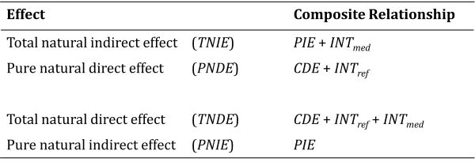

Show code
#|echo=FALSE
#explicitly set graphics device to png(type=cairo) to knit ggblend plots properly
knitr::opts_chunk$set(dev = "png", dev.args = list(type = "cairo-png"))
This is the third and final entry in a three-part blog series on modeling moderators in criminological data. In Part 1, I covered issues related to estimating and interpreting interaction effects with binary or skewed count outcome variables. In Part 2, I introduced counterfactual causality, exposure-mediator interactions, and a potential outcomes framework for conducting a four-way decomposition of a total effect into controlled direct effect (CDE), pure indirect effect (PIE), reference interaction (INTref), and mediated interaction (INTmed) components.
In this final entry, I illustrate how to use the CMAverse software package in R to conduct “causal mediation” analysis, which relies on the 4-way potential outcomes decomposition introduced in Part 2 to disentangle indirect and interaction effects in the presence of a potential exposure-mediator interaction. Along the way, I will also introduce the important assumptions required to interpret “causal mediation” results as estimates of causal effects.
Do you ever examine interaction effects? If so, is it ever plausible that the hypothesized moderator also mediates the effect of the exposure (i.e., treatment or focal causal variable)?
Do you ever test for indirect effects? If so, is it ever plausible that the hypothesized mediator also interacts with the exposure (treatment or focal causal) variable? In other words, is it possible that the exposure variable’s effect could differ across levels of the mediator, or is it possible that the mediator’s effect could differ across exposed and unexposed groups?
Do you work with data (e.g., crime or delinquency counts) for which nonlinear modeling approaches (e.g., Poisson regression) are more appropriate than traditional linear regression procedures? When testing indirect effects with such data, do you find yourself making concessions (e.g., dichotomizing data or using linear models anyway) because the software programs you use to test for mediation are restricted to a limited set of specific (e.g., linear; logistic) distributions?
If you answered “YES” to any of the above questions, then you should probably learn about causal mediation procedures. If you said “NO” to the first two questions, consider the following footnote that I included in Part 2 of this series:
“At this point, you might be wondering: ‘Do I really need to do this? The [insert] theory I am testing does not predict such an interaction!’ Well, failure to examine and adjust for the possibility of an exposure-mediator interaction is equivalent to forcing your model of the data generating process to conform to a strong and potentially incorrect theoretical assumption about underlying data generating processes.
In SEM parlance, it is equivalent to ‘fixing’ the effect of X on Y through M to be the same at all values of M. In situations where the effect of X on Y indeed varies across strata of M, failure to account for it could result in biased or incomplete inferences. In contrast, allowing for and decomposing a potential exposure-mediator interaction is, in SEM terms, akin to ‘freeing’ that parameter, thus permitting a test of that strong theoretical assumption. In situations where no such interaction exists, the magnitude of the interaction will approach zero, and traditional and ‘causal’ mediation approaches (e.g., ‘controlled’ and ‘natural’ effect estimates) will converge to the same values. In those situations, decomposition would be unnecessary yet nonetheless informative.
In short, there is substantial upside and little downside apart from learning the skills to testing and accounting for exposure-mediator interactions whether or not one exists, yet there are potentially substantial inferential risks to not doing so when one exists. So, just how a priori confident are you in that likely imprecise and discursive theory of yours?”
If you ever test moderation or mediation hypotheses, then it is generally a good idea to incorporate the evaluation of exposure-mediator interactions into your research workflow. The “causal mediation” approach I describe in this post is well-suited for this task. It is also generally applicable to a wide variety of data analytic situations and distributional types for exposures, mediators, and outcomes. For example, the CMAverse package in R introduced below can be applied to various combinations of continuous, binary, count, nominal, ordinal, and survival data.
At this point, I am assuming you read the first two entries in this series. In particular, I assume you understand the issues discussed in Part 1 pertaining to the conditional or “interactive” nature of model coefficients when nonlinear link functions are specified in generalized linear models. I also assume you understand the four-way total effect decomposition components (CDE; PIE; INTref; INTmed) described in Part 2.
If so, then you are ready to move on to a more realistic example of total effect decomposition using simulated data in R. For this example, I will rely primarily on the CMAverse package, which adopts a causal mediation approach to disentangling indirect and interaction effects in the presence of an exposure-mediator interaction. Though we took a long and winding road to arrive here, as I explained at the beginning of my Moderator Madness, Part 1 post, this is the goal that initially motivated the three-part blog series.
Before diving in, I should also explain that I wrote this example with social scientists in mind that already have some familiarity with “traditional” (e.g., Baron & Kenny steps; product of ab path coefficients) approaches to modeling mediation processes and are looking for a basic introduction to the less well known yet generally preferred “causal mediation” methods. If you find yourself in the position of testing or estimating indirect effects and unaware of the causal mediation approach, then I strongly encourage you to read more on the topic. There are lots of excellent summaries, overviews of software alternatives, and introductory primers on causal mediation and on CMAverse specifically. Additionally, the CMAverse quickstart website itself is a great place to start. If nothing else, I hope this entry serves as a segue for folks curious about advancing beyond traditional mediation tests by learning about causal mediation approaches.
Without further ado, let’s get to it!
For this illustration, I will generate simulated data that are very similar to those found in Example 2 from my “Moderator Madness: Part 1” post. In that post, I stated:
In the second example, I assume that the true data generating process underlying both imaginary papers (i.e., “paper 1” and “paper 2” in our example above) is an integrated causal model in which moral beliefs is both a mediating and moderating mechanism. That is, in the simulated data for the second example, there is a true indirect effect of parental support on delinquency through strong moral beliefs as well as a direct effect of parental support on delinquency that varies systematically across levels of (i.e., “interacts with”) strong moral beliefs.
Thus, the simulated data here contain the same three focal variables. The exposure, parental support practices, is conceptualized as a variable measure of parental intervention(s) on youth attitudes and behaviors; it is generated here as a continuous, normally distributed, mean-centered variable. The mechanism, youths’ strong moral beliefs, is generated as a negatively skewed ordinal variable ranging from 0 to 5, which was created by reverse-scoring a truncated Poisson-distributed weak moral beliefs variable. The outcome, delinquency, is a positively skewed, Poisson-distributed event count variable ranging from 0 to a truncated theoretical maximum of 7.
Again, the simulated data will be generated using the following hypothetical causal mediation and moderation assumptions: Parental support practices are a somewhat effective cause of youth’s internalization of strong moral beliefs, and strong moral beliefs effectively cause fewer delinquent behavior events (i.e., they constrain temptations, promote resistance to, or encourage selection out of delinquency). Thus, the data generating processes include causal mediation or indirect effects of an exposure through a mechanism.
Additionally, parental support directly discourages or reduces involvement in youth delinquency.1 However, this effect varies across levels of the mechanism. Specifically, parental support’s negative effect on youth delinquency is most pronounced among youth with weak moral beliefs (i.e., low strong moral beliefs index scores); these youth are most at risk of engaging in delinquency, so effective parental interventions have the greatest potential to enact behavioral change among these youth. In contrast, youth with strong moral beliefs are highly unlikely to engage in delinquency irrespective of the degree of parental support they experience; therefore, parental support is largely ineffective among youth with the highest strong moral beliefs index scores. Since the effect of parental support on delinquency varies across levels of a mechanism (e.g., across youth with weak versus strong moral beliefs), then the data generating processes include moderation or interaction effects.
Moreover, since parental support both operates indirectly through and interacts with youth’s strong moral beliefs, I expect the operation of an underlying exposure-mediator interaction in the data generating process. Recall, when we expect the existence of an additive exposure-mediator interaction, then part of the total effect of parental support might be attributable to a reference interaction, which involves an additive interaction that would occur when the mediator is observed even the absence of the exposure (e.g., if some youth internalize strong moral beliefs even in the absence of high parental support). Additionally, since parental support also partly causes strong moral beliefs, then parental support may be partly responsible for setting the very levels across which it variably or conditionally affects delinquency. Thus, part of the total effect of parental support on delinquency also might be attributable to a mediated interaction.2
Now that the key variables and their underlying causal relationships have been discursively described, it is a good idea to generate a directed acyclic graph or DAG that concisely and formally communicates the causal assumptions about the data generating processes underlying our data simulation.
#|echo=FALSE
#explicitly set graphics device to png(type=cairo) to knit ggblend plots properly
knitr::opts_chunk$set(dev = "png", dev.args = list(type = "cairo-png"))library(tidyverse)
library(here)
library(simstudy)
# https://cran.r-project.org/web/packages/simstudy/vignettes/simstudy.html
# https://kgoldfeld.github.io/simstudy/articles/simstudy.html
library(ggplot2)
library(patchwork)
# library(psych) #detach to ensure alpha works with ggplot
# library(devtools)
# install_github("jtextor/dagitty/r")
library(dagitty)
library(ggdag)
library(truncnorm)
library(see)
# devtools::install_github("strengejacke/strengejacke")
library("sjPlot")
library("ggthemes")
library("margins")
library("ggdist")
library(gt)
library(gtsummary)
library(ggraph)
library(CMAverse)
library(ggExtra)
library(ggeffects)
library(ggblend)#function to shorten arrows (edges)
# https://stackoverflow.com/questions/65420136/how-do-you-adjust-the-arrows-in-a-ggplot-of-a-ggdag
shorten_dag_arrows <- function(tidy_dag, proportion){
# Update underlying ggdag object
tidy_dag$data <- dplyr::mutate(tidy_dag$data,
xend = (1-proportion/2)*(xend - x) + x,
yend = (1-proportion/2)*(yend - y) + y,
xstart = (1-proportion/2)*(x - xend) + xend,
ystart = (1-proportion/2)*(y-yend) + yend)
return(tidy_dag)
}
# modified from Valeri & VanderWeele 2013, Fig.2
# causalDAG2 <- dagify(
# Y ~ A + M + C1 + C2,
# M ~ A + C1 + C2,
# A ~ C1,
# exposure = "A",
# outcome = "Y",
# coords=list(
# x=c(A=1, M=1.5, Y=2, C1=1.5, C2=1.9),
# y=c(A=1, M=2, Y=1, C1=1.4, C2=1.75)
# )) %>% tidy_dagitty()
# change to simplified version from
# https://bs1125.github.io/CMAverse/articles/quickstart.html
causalDAG2 <- dagify(
Y ~ A + M + C,
M ~ A + C,
A ~ C,
exposure = "A",
outcome = "Y",
coords=list(
x=c(A=1, M=1.5, Y=2, C=1.5),
y=c(A=1, M=2, Y=1, C=3)
)) %>% tidy_dagitty()
#shorten edges
causalDAG2p <- shorten_dag_arrows(causalDAG2, 0.08)
#create factor variable to isolate edge of interest, permits specifying edge color
causalDAG2p <- causalDAG2p %>% dplyr::mutate(
myedge1 = if_else(causalDAG2p$data$name == "C", "yes", "no"),
# myedge1 = if_else(causalDAG2p$data$name == "C1" | causalDAG2p$data$name == "C2",
# "yes", "no"),
modlinetype = ifelse(myedge1 == "yes", "solid", "solid") #change 2nd "solid" to "dashed" if desired
)
#plot dag
fig4 <- causalDAG2p %>% ggplot(aes(x=x, y=y, xend=xend, yend=yend)) +
geom_dag_edges(aes(x = xstart, y = ystart, edge_color=myedge1,
edge_linetype = modlinetype), show.legend = FALSE) +
geom_dag_text(label=c("A\n(Parental\nSupport)", "C\n(Measured Confounders\nNot Affected by Exposure)", "M\n(Moral\nBeliefs)", "Y\n(Delinquency)"),
color="#56B4E9") +
theme_dag() +
guides(fill = 'none', color = 'none') +
scale_y_continuous(expand=expansion(mult=c(0.2,0.2))) +
#change default expansion on y-axis min & max
# ggtitle("Modified Figure 2 from Valeri & VanderWeele 2013") +
scale_edge_colour_manual(values=c("darkgrey", "maroon")) +
theme(plot.title = element_text(size = 12))
The DAG above is a modified version of Part 1’s basic DAG, with a couple notable changes. First, I added common “causal mediation” notations to variable names, such as exposure label “A” to “Parental Support” variable. Second, I added “measured confounders” to the DAG. I made this change with the hopes of reminding readers that making causal inferences from results of “causal mediation” models (and from traditional mediation models) requires important, and perhaps untenable, assumptions about the lack of unmeasured sources of confounding of the X-M, M-Y, or X-Y relationships.3 Valeri and VanderWeele (2013) succinctly describe these essential assumptions:
“…controlled direct effects require (a) no unmeasured treatment– outcome confounding and (b) no unmeasured mediator–outcome confounding. Natural direct and indirect effects require these assumptions and also (c) no unmeasured treatment-mediator confounding and (d) no mediator–outcome confounder affected by treatment.” (p.140)
They also describe a (regularly overlooked) challenge with meeting these assumptions even in randomized controlled trials:
“It is important to note that randomizing the treatment is not enough to rule out confounding issues in mediation analysis. This is because randomization of the treatment rules out the problem of treatment–outcome and treatment-mediator confounding but does not guarantee that the assumption of no confounding of mediator– outcome relationship holds. This is because even if the treatment is randomized, the mediator generally will not be.” (p.140)
Research designs in criminology often violate some or all of these assumptions, thereby calling into question the appropriateness of causal interpretations of results. At the very least, I think we owe it to readers to routinely acknowledge such necessary causal assumptions and to transparently identify those assumptions that we think may be plausibly violated in our research designs. Beyond this, researchers can also consider conducting sensitivity analyses to determine the robustness of conclusions to assumption violations.
In this entry, I will not illustrate confounding adjustments or sensitivity checks. My primary goal here is to simply introduce the causal mediation approach as a generally preferred option over traditional (e.g., product of coefficients) approaches in situations where researchers have already decided that a mediation (or moderation) analysis is appropriate. Given these aims, the simulated example below is sufficiently complex for an introductory tutorial without also including confounding of the modeled relationships. However, once one is familiar with CMAverse code, terminology, and interpretation of results, it is pretty straightforward to extend this example by including and adjusting for measured confounders, and the various resources I have linked throughout will also provide readers with additional information about recommended sensitivity checks.4
Before getting to the simulation, it is probably a good idea to introduce some minor changes in terminology and basic notation that you will encounter when using CMAverse to perform effect decomposition.
First, the focal variables are labeled as follows:
Exposure == A (Alternatively referred to as “X” in Part 2)
Mediator == M
Outcome == Y
Confounders == C (Ignored here, but choose wisely)
Though I do not include confounders in this example, two types of outcome confounders are sometimes distinguished as C1 (exposure-outcome confounders) and C2 (mediator-outcome confounders). Note that there may also be potential confounding of the exposure-mediator relationship.
Second, depending upon the model and options selected, the CMAverse output may contain terms that do not exactly match the four-way total effect decomposition components described in Part 2. I recommend reviewing those four components (CDE; PIE; INTref, INTmed) if needed as they are foundational to understanding CMAverse’s effect decomposition.
Direct Effects: You should recognize the controlled direct effect (CDE). However, the CMAverse output may also contain estimates for a pure natural direct effect (PNDE) and a total natural direct effect (TNDE).
Indirect Effects: Instead of encountering a pure indirect effect (PIE) estimate, the output might instead contain estimates for a pure natural indirect effect (PNIE) and a total natural indirect effect (TNIE).
Recall, controlled direct effects hold the mediator constant at a specific value (M=m). For example, a controlled direct effect (CDE) might contrast expected outcomes across A=0 and A=1 while holding the mechanism constant at a specific value like M=0.
Understanding natural effects requires comprehending and extending upon the counterfactual contrasts underlying the CDE described in Part 2. Remember that, in the presence of mediation, the mediator is expected to change as the exposure changes. So, setting the mediator to a constant value (e.g., M=0) may not provide a realistic or “natural” contrast. Natural effects allow the mediator to vary as it “naturally” would across exposure conditions, and they are then estimated by holding the mediator constant at specific counterfactual values that the mediator would be expected to take under specified exposure conditions.
For example, we might estimate a (pure) natural direct effect as a contrast in Y across exposure levels A=0 and A=1 when M is set to the level it is expected to be when we do[A=0] (i.e., M0). Modifying the notation used above, we can summarize this contrast as Y(do[A=1],do[MA=0]) - Y(do[A=0],do[MA=0]), or Y10 - Y00. You might notice that this overlaps with the notation presented in Part 2; however, that post presented simplified “natural” contrasts for the sake of clarity in explaining the basic decomposition components. It is important to realize, though, that do[MA=0] is not necessarily the same as setting M to m=0, unless the mechanism is expected to equal “0” when A=0.5
You can find more detailed descriptions elsewhere of the differences between controlled and natural effects. Once you wrap your head around these important distinctions between counterfactual contrasts and their relations to natural and controlled effects, then you may find yourself beginning to comprehend other important issues underlying mediation, moderation, and total effect decomposition.
First, in a linear model without interactions (i.e., where INTref=0 and INTmed=0), the CDE estimates will not change across different values of M. Additionally, in such models, controlled and natural direct effects will converge on the same estimates. This is because doing A=1 (versus A=0) will have the same effect on Y at all values of M, so doing M=0 or doing MA=0 will generate the same direct effect estimate. This should become apparent in the examples using simulated data below.
Second, as you have probably figured out by now, things are not as straightforward in more complex models with nonlinear link functions or exposure-mediator interactions. For instance, when the effect of the exposure varies across levels of the mechanism, as it would in the presence of an exposure-mediator interaction, controlled (Y1m - Y0m) and natural (e.g., Y10 - Y00) direct effect estimates may vary as well. This, too, should become apparent in the examples below.
Third, when there are nonlinearities or exposure-mediator interactions, one could conceivably estimate a different CDE for every possible value of M! This makes it impossible to perform effect decomposition in the presence of an interaction using controlled effects. However, the counterfactual contrasts underlying natural direct and indirect effect estimates are uniquely defined so there is a single value even in the presence of nonlinearities and exposure-mediator interactions. This permits us to perform effect decomposition even in those situations involving more complex causal relationships.
Put differently, given the same exposure contrasts (e.g., setting astar=0 and a=1 in CMAverse models), changing the mediator value (e.g, from mval = list(0) to mval = list(1)) may result in different controlled direct effect estimates, but it will not change natural direct effect estimates. This may not be apparent in the examples below, but you can easily test it yourself (e.g., by copying my code, setting mval to different mediator values, and comparing results).
I just told you that there is only one natural direct and natural indirect effect. Yet, your CMAverse output will probably show more than one natural direct and indirect effect estimate! Do not lose trust in me just yet. It is more accurate to say that there is only one “pure” natural direct effect, and there is only one “total” natural direct effect estimate. So, what is the difference between “pure” and “total” effects?
Ultimately, the difference between “pure” and “total” effects comes down to the nonzero “mediated interaction” or INTmed estimate that we may find when there is an exposure-mediator interaction. Recall, the INTmed estimate describes how, in the presence of both mediation and moderation, we can contribute some differences in the effect of X on Y across different levels of M to the fact that X causes different levels of M. Well, when we decompose mediation and moderation components, should we attribute INTmed effects to mediation processes or to moderation processes?
That is, are INTmed effects best thought of as indirect effects, or are they best thought of as interaction effects? The secret to understanding the difference between “pure” and “total” effect estimates, and which specific ones you will want to interpret, lies in your answer to that question.
Fundamentally, INTmed effects are simultaneously indirect and interaction effects. However, depending upon your research question and estimand of interest, you may wish to attribute that INTmed component to the “direct” effect of X on Y at specific counterfactual values of M (i.e., absorbed into heterogeneous estimates of direct effects across values of M) or, instead, to the “indirect” effect of X on Y through M. In any case, there are a few important points to remember when interpreting these effects.
First, “pure” effects do not include the INTmed component, whereas “total” effects do include the INTmed component. So, for instance, a “pure direct effect” does not contain any mediation components; rather, it purely summarizes the effect of X on Y that is due to its controlled direct effect (CDE) and any heterogeneity across M that is not due to mediation (i.e. attributed to INTref but not INTmed). Meanwhile, a “total indirect effect” contains all indirect effect sources, including the “pure” indirect effect (PIE) of X on Y through M and any interaction component that is due to mediation (i.e., INTmed).
Second, we always pair the following effect estimates:
These pairings ensure that: (1) all mediation and moderation components (CDE; PIE; INTref; INTmed) are accounted for in the given pair, and (2) that the INTmed component is always counted once and only once, either in the (total) direct effect estimate or in the (total) indirect effect estimate. The table below shows which of the four decomposition components are included in each of the pure and total direct and indirect effect estimates.

Third, since all four components of a total effect are accounted for in each of these two pairings of pure and total effects, each paired direct and indirect effect estimate essentially sums to the total effect of an exposure on an outcome. In fact, in a linear model, the PNDE + TNIE estimates quite literally will sum to the same value as the TNDE + PNIE estimates, and each of these pairs will sum to the total effect estimate. The pair you choose to interpret, then, depends upon your research question, goals, and estimand of interest.
Fourth, in the absence of an exposure-mediator interaction - such as when the interaction term equals zero or when you ignore a nonzero interaction term by not including it in the model - then the CDE, TNDE, and PNDE estimates all will converge to the same value. This is because the INTref and INTmed components are essentially fixed to zero in these situations, either by the data or by the researcher.
That’s enough talking. Let’s start walking with a simulation.
I start by simulating n=3,000 observations, which should allow us to generate relatively precise estimates of each estimated component. We have more than enough going on; we do not need to deal simultaneously with issues related to particularly noisy estimates.
#|message=FALSE
options(scipen=0, digits = 3)
# Simulate data (Sim.2)
set.seed(1138)
n <- 3000
def2 <- defData(varname = "ParentSupport", dist = "normal",
formula = 0, variance = 1)
def2 <- defData(def2, varname = "WeakMoralBlfs", dist = "poisson",
formula = "-.3 + (-.3)*ParentSupport", link = "log")
def2 <- defData(def2, varname = "Delinquency", dist = "poisson",
formula = "-.7 + (-.25)*ParentSupport + .4*WeakMoralBlfs +
(-.15)*ParentSupport*WeakMoralBlfs", link = "log")
def2 <- defData(def2, varname = "Delinquency2", dist = "poisson",
formula = "-.7 + (-.25)*ParentSupport + .4*WeakMoralBlfs +
(-.15)*ParentSupport*WeakMoralBlfs", link = "log")
simdat2 <- genData(n, def2)
#NOTE: Simulated alternative "Delinquency2" variable to illustrate interaction
# on linear estimation scale in nonlinear model
# simdat2 %>% sjPlot::view_df()
# simdat2 %>%
# ggplot(aes(x=WeakMoralBlfs, y=Delinquency)) +
# geom_point()
# cap LowMoral at 5 (0-5 item) - randomly replace oob values with values in bounds
inds2 <- simdat2$WeakMoralBlfs > 5
simdat2$WeakMoralBlfs[inds2] <- sample(0:5, sum(inds2), replace = TRUE)
simdat2$StrgMoralBlfs <- 5 - simdat2$WeakMoralBlfs
# cap Delinquency at 7 (0-7 item) - randomly replace oob values with in bounds values
inds2 <- simdat2$Delinquency > 7
simdat2$Delinquency[inds2] <- sample(0:7, sum(inds2), replace = TRUE)
# inds3 <- simdat2$Delinquency2 > 7
# simdat2$Delinquency2[inds3] <- sample(0:7, sum(inds3), replace = TRUE)
# Truncation minimizes relative interaction, so not truncate Delinquency2
# increases relative differences on outcome scale for viz in final example
# simdat2 %>% sjPlot::view_df()
# simdat2 %>%
# ggplot(aes(x=WeakMoralBlfs, y=Delinquency)) +
# geom_point()
#Even with n=10k, need to consider collapsing low values for StrgMoralBlfs and recenter to min=0
#Raise points re: rare events & skewed data
# out of n=10k, 18.1% of cases have StrgMoralBlfs <=3
# (nrow(subset(simdat2, StrgMoralBlfs <=3))/10000)*100
# out of n=10k, 1.02% (n=102) of cases have StrgMoralBlfs <=1
# (nrow(subset(simdat2, StrgMoralBlfs <=1))/10000)*100
# out of n=10k, 0.17% (n=17) of cases have StrgMoralBlfs <=0
# (nrow(subset(simdat2, StrgMoralBlfs <=1))/10000)*100
#Collapse [0,1] values & recenter StrgMoralBlfs from 0-4
simdat3 <- simdat2 %>%
mutate(
StrgMoralBlfs = if_else(
StrgMoralBlfs <= 1, 1, StrgMoralBlfs),
StrgMoralBlfs = StrgMoralBlfs - 1
)
# summary(simdat3$StrgMoralBlfs)
p <- ggplot(simdat3, aes(x = ParentSupport, y = StrgMoralBlfs)) +
geom_point(color="#E69F00") +
theme_minimal()
# Densigram
ggMarginal(p, type = "densigram",
fill="#E69F00")The plot above shows the joint distribution of the exposure (A=ParentSupport) and mechanism (M=StrgMoralBlfs). Notice the lack of observations in the bottom right of the plot, at the highest values of parental support (A>2) and lowest values of strong moral beliefs (M=0). This pattern might be expected given the existence of mediation processes; that is, high parental support causes strong moral beliefs, so we might not expect to observe the lowest values of the mechanism at the highest exposure levels.
Note, too, that there are observations with high mechanism values (e.g., strong moral beliefs, or M=4) across a wide range of exposure levels (e.g., from -2SD to +3SD levels of parent support). This means a nonzero INTref component is possible, since a nonzero reference interaction requires that the mechanism be present even in the absence (or, in this case, at low levels) of the exposure.
Finally, there are relatively few observations at the lowest value (M=0) of the skewed, Poisson-distributed mechanism across the range of exposure levels. One consequence is that estimates of the causal effect of the exposure generated at the highest mechanism levels will be much noisier and more uncertain than those generated at the lowest mechanism levels. This is the case despite simulating a relatively large sample of n=3,000 observations. Assuming distributions of variables like moral beliefs and delinquency tend to be similarly skewed in the real world (and they are), you can imagine how much noisier and more uncertain such estimates might be in smaller real-world criminological samples.
Now that I have simulated data resembling real-world self-reported criminological data, my next step will be to build regression models and then estimate and plot marginal effects of parental support on delinquency at different levels of strong moral beliefs to visualize any exposure-mediator interactions in these data.
As I explained in Part 1, I will want to build a generalized linear model with a nonlinear link function that can flexibly describe the data generating processes causing the skewed distributions and nonlinearities observed in the simulated data. Additionally, I will want to add an interaction term to that model to account for the possibility of an exposure-mediator interaction on the estimation scale.
Yet, I will start by presenting results from a simple linear interaction model. Why? Well, because so many researchers in our field seem to be most comfortable, if not outright obsessed, with simple linear models. What else explains our field’s collective unwillingness to move on from them?
#|message=FALSE
# Sim.2 linear model
lm2 <- lm(Delinquency ~ ParentSupport * StrgMoralBlfs, data=simdat3)
# Sim.2 nonlinear model
glm2 <- glm(Delinquency ~ ParentSupport * StrgMoralBlfs, data=simdat3, family="poisson")
# function for custom p-values
roundp <- function(x) {
if_else(
is.na(x),
NA_character_,
if_else(x < 0.001, format(x, digits = 3, scientific = TRUE), format(round(x, 3), scientific = F))
)
}
# function for reg output w/custom p-values
regsum <- function(mymod) {
tbl_regression(mymod, intercept=TRUE, pvalue_fun = roundp) %>%
add_significance_stars(
hide_se = FALSE,
hide_ci = FALSE,
hide_p = FALSE
)
}
# Regression output
Ex2tab1 <- regsum(lm2) %>%
as_gt() %>%
gt::tab_header(title = "Linear regression predicting delinquency values")
Ex2tab2 <- regsum(glm2) %>%
as_gt() %>%
gt::tab_header(title = "Poisson regression predicting delinquency event rates")
#Plot interactions
#plot at all four values: minimum (0), (1), median (2), and maximum (3) strong moral beliefs
#show x-axis from approx -2sd to 2sd parental support
plot_lm2 <- plot_model(lm2, type = "pred", show.data = FALSE,
terms = c("ParentSupport", "StrgMoralBlfs [0,2,4]")) +
geom_hline(yintercept=7, linetype="dashed") +
theme_minimal() + coord_cartesian(xlim=c(-2,2), ylim=c(-1,8)) +
scale_colour_colorblind() +
scale_fill_colorblind() +
labs(x="Parental Support",
y="Delinquency",
title="Predicted conditional marginal effects of parent support on delinquency",
subtitle="Plotted at minimum (0), scale midpoint (2), & maximum (4) strong moral beliefs\n(Linear regression, n=3k simulated observations)")
plot_glm2 <- plot_model(glm2, type = "pred", show.data=FALSE,
terms = c("ParentSupport", "StrgMoralBlfs [0,2,4]")) +
geom_hline(yintercept=7, linetype="dashed") +
theme_minimal() + coord_cartesian(xlim=c(-2,2), ylim=c(-1,8)) +
scale_colour_colorblind() +
scale_fill_colorblind() +
labs(x="Parental Support",
y="Delinquency",
title="Predicted conditional marginal effects of parent support on delinquency",
subtitle="Plotted at minimum (0), scale midpoint (2), & maximum (4) strong moral beliefs\n(Poisson regression, n=3k simulated observations)")Ex2tab1| Linear regression predicting delinquency values | ||||
|---|---|---|---|---|
| Characteristic | Beta1 | SE2 | 95% CI2 | p-value |
| (Intercept) | 2.1*** | 0.068 | 2.0, 2.3 | 1.11e-190 |
| ParentSupport | -1.2*** | 0.063 | -1.3, -1.1 | 1.46e-72 |
| StrgMoralBlfs | -0.42*** | 0.020 | -0.46, -0.38 | 9.17e-91 |
| ParentSupport * StrgMoralBlfs | 0.26*** | 0.019 | 0.23, 0.30 | 9.07e-43 |
| 1 *p<0.05; **p<0.01; ***p<0.001 | ||||
| 2 SE = Standard Error, CI = Confidence Interval | ||||
#|message=FALSE
plot_lm2# plot_lm2 &
# theme(legend.position = 'bottom',
# legend.direction = 'horizontal') #|message=FALSE
#dev = "png"
#dev.args = list(type = "cairo-png")
#use ggeffects::ggpredict() to save plot_model data for use in ggplot
lm2df <- ggpredict(lm2, terms = c("ParentSupport", "StrgMoralBlfs [0,2,4]"))
#save subsets of simdat3 to plot observations where StrgMoralBlfs in (0,2,4)
simdat3sub <- simdat3 %>%
filter(StrgMoralBlfs %in% c(0,2,4)) %>%
mutate(
StrgMoralBlfs = as_factor(StrgMoralBlfs))
# prediction plot with data subset - use ggblend to improve overlap viz
predplot1 <- ggplot(data=simdat3sub, aes(x=ParentSupport, y=Delinquency,
color=StrgMoralBlfs, group=StrgMoralBlfs)) +
geom_hline(yintercept=7, linetype="dashed") +
# geom_point(data=simdat3sub[simdat3sub$StrgMoralBlfs == 0], alpha=0.4) +
# geom_point(data=simdat3sub[simdat3sub$StrgMoralBlfs %in% c(2,4)], alpha=0.1) +
geom_point() |> partition(vars(StrgMoralBlfs)) |> blend("lighten") |>
blend("multiply", alpha = 0.4)+
scale_colour_colorblind() +
scale_fill_colorblind() +
theme_minimal() + coord_cartesian(xlim=c(-2,2), ylim=c(-1,8)) +
geom_line(data=lm2df, aes(x=x, y=predicted,
linetype=group, color=group), inherit.aes=FALSE) +
geom_ribbon(data=lm2df, aes(x=x, y=predicted,
ymin=conf.low, ymax=conf.high, fill=group),
alpha=0.3, inherit.aes=FALSE) +
scale_linetype_manual(values = c("solid", "solid", "solid")) +
guides(linetype="none", fill="none") +
labs(x="Parental Support",
y="Delinquency",
title="Predicted conditional marginal effects of parent support on delinquency",
subtitle="Plotted at minimum (0), scale midpoint (2), & maximum (4) strong moral beliefs\n(Poisson regression, n=3k simulated observations)")
predplot1#|message=FALSE
plot_lm2 +
coord_cartesian(xlim=c(min(simdat3$ParentSupport), max(simdat3$ParentSupport)),
ylim=c(-3,9)) +
labs(x="Parental Support",
y="Delinquency",
title="Predicted conditional marginal effects of parent support on delinquency",
subtitle="Plotted across full range (min-to-max) of parental support values and\nat minimum (0), scale midpoint (2), & maximum (4) strong moral beliefs\n(Poisson regression, n=3k simulated observations)") #|message=FALSE
ggplot(data=simdat3sub, aes(x=ParentSupport, y=Delinquency,
color=StrgMoralBlfs, group=StrgMoralBlfs)) +
geom_hline(yintercept=7, linetype="dashed") +
geom_point(data=simdat3sub[simdat3sub$StrgMoralBlfs == 0], alpha=0.4) +
scale_colour_colorblind() +
scale_fill_colorblind() +
theme_minimal() + coord_cartesian(xlim=c(-2,2), ylim=c(-1,8)) +
geom_line(data=lm2df, aes(x=x, y=predicted,
linetype=group, color=group), inherit.aes=FALSE) +
geom_ribbon(data=lm2df, aes(x=x, y=predicted,
ymin=conf.low, ymax=conf.high, fill=group),
alpha=0.3, inherit.aes=FALSE) +
scale_linetype_manual(values = c("solid", "solid", "solid")) +
guides(linetype="none", fill="none") +
labs(x="Parental Support",
y="Delinquency",
title="Predicted conditional marginal effects of parent support on delinquency",
subtitle="Plotted at minimum (0) strong moral beliefs\n(Poisson regression, n=3k simulated observations)")Hey, the linear interaction model detected a substantial interaction between parental support and moral beliefs! So far, so good, right? Not so fast. How well do you think the linear regression slopes describe the data and underlying data generating processes?
I attempt to visualize this in the second figure above (third tab, entitled “Prediction Plots with Data”), which overlays the marginal effect prediction lines with a scatterplot of the relevant data (i.e., a subset of Strong Moral Beliefs values equal to “0”, “2”, and “4”). Close examination of this figure appears to reveal some areas of poor fit between the model’s linear predictions and the underlying data. Of particular concern are some out of bounds predictions below “0” on predicted delinquency counts (bottom right side of the plot). Of course, you expected some problems with a linear model because you read Part 1 entry.
Yet, what would happen if I were to use this particular linear interaction model to make predictions about delinquency values at higher exposure levels? After all, our maximum observed ParentSupport score is 3.6, but we are only plotting from about -2SD to +2SD values on this variable in the first figure. You can see what happens when I extend the prediction plot to the full observed (minimum to maximum) range of ParentSupport scores in the third figure (fourth tab) above.
Perhaps unsurprisingly, the crossover interaction appears even more pronounced in this version of the plot. With the exception of predictions at the highest mechanism values (M=4), this model predicts negative delinquency counts at high observed exposure levels; of course, negative outcome scores were not observed and are not even logically possible in this case. As discussed in Part 1, these sorts of problematic model predictions are routinely generated as artifacts of inappropriately applying a linear model to nonlinear data.
Speaking of model issues, I often think regression results like these convey an illusory degree of precision around model-based estimates and predictions. To illustrate, check out the fourth figure (fifth tab) above, which overlays marginal predictions with a scatterplot of only the subset of observations for which M=0.
In this plot, notice the relative lack of observations at M=0 despite a relatively large sample (n=3,000 total)? I referenced this issue earlier after simulating the data. Now, look at the spread of the relatively sparse observations where M=0 (black dots), and compare the confidence interval bands for the M=0 prediction line (black line). Given the scarcity of data at this mechanism level and the fit of that line to the data points in the scatterplot, do you feel that these confidence bands effectively communicate the degree of uncertainty we should have with the predictions implied by that line? Perhaps you do, and I am simply a curmudgeon. In any case, this is another topic for a different entry.
Now, let’s compare these results with those generated by a generalized linear model specifying a Poisson distributed outcome with a log link (aka, a “nonlinear” model).
Ex2tab2| Poisson regression predicting delinquency event rates | ||||
|---|---|---|---|---|
| Characteristic | log(IRR)1,2 | SE2 | 95% CI2 | p-value |
| (Intercept) | 0.99*** | 0.064 | 0.86, 1.1 | 9.75e-54 |
| ParentSupport | -0.38*** | 0.047 | -0.47, -0.29 | 1.08e-15 |
| StrgMoralBlfs | -0.42*** | 0.021 | -0.46, -0.38 | 1.88e-90 |
| ParentSupport * StrgMoralBlfs | 0.00 | 0.016 | -0.03, 0.03 | 0.963 |
| 1 *p<0.05; **p<0.01; ***p<0.001 | ||||
| 2 IRR = Incidence Rate Ratio, SE = Standard Error, CI = Confidence Interval | ||||
#|message=FALSE
plot_glm2#|message=FALSE
#use ggeffects::ggpredict() to save plot_model data for use in ggplot
glm2df <- ggpredict(glm2, terms = c("ParentSupport", "StrgMoralBlfs [0,2,4]"))
#prediction plot with data subset & ggblend
predplot2 <- ggplot(data=simdat3sub, aes(x=ParentSupport, y=Delinquency,
color=StrgMoralBlfs, group=StrgMoralBlfs)) +
geom_hline(yintercept=7, linetype="dashed") +
# geom_point(data=simdat3sub[simdat3sub$StrgMoralBlfs == 0], alpha=0.4) +
# geom_point(data=simdat3sub[simdat3sub$StrgMoralBlfs %in% c(2,4)], alpha=0.1) +
geom_point() |> partition(vars(StrgMoralBlfs)) |> blend("lighten") |>
blend("multiply", alpha = 0.4) +
scale_colour_colorblind() +
scale_fill_colorblind() +
theme_minimal() + coord_cartesian(xlim=c(-2,2), ylim=c(-1,8)) +
geom_line(data=glm2df, aes(x=x, y=predicted,
linetype=group, color=group), inherit.aes=FALSE) +
geom_ribbon(data=glm2df, aes(x=x, y=predicted,
ymin=conf.low, ymax=conf.high, fill=group),
alpha=0.4, inherit.aes=FALSE) +
scale_linetype_manual(values = c("solid", "solid", "solid")) +
guides(linetype=FALSE, fill=FALSE) +
labs(x="Parental Support",
y="Delinquency",
title="Predicted conditional marginal effects of parent support on delinquency",
subtitle="Plotted at minimum (0), scale midpoint (2), & maximum (4) strong moral beliefs\n(Poisson regression, n=3k simulated observations)")
predplot2#|message=FALSE
#prediction plot with data subset & ggblend
predplot2b <- ggplot(data=simdat3sub, aes(x=ParentSupport, y=Delinquency,
color=StrgMoralBlfs, group=StrgMoralBlfs)) +
geom_hline(yintercept=7, linetype="dashed") +
geom_point(data=simdat3sub[simdat3sub$StrgMoralBlfs == 0], alpha=0.4) +
scale_colour_colorblind() +
scale_fill_colorblind() +
theme_minimal() + coord_cartesian(xlim=c(-2,2), ylim=c(-1,8)) +
geom_line(data=glm2df, aes(x=x, y=predicted,
linetype=group, color=group), inherit.aes=FALSE) +
geom_ribbon(data=glm2df, aes(x=x, y=predicted,
ymin=conf.low, ymax=conf.high, fill=group),
alpha=0.4, inherit.aes=FALSE) +
scale_linetype_manual(values = c("solid", "solid", "solid")) +
guides(linetype=FALSE, fill=FALSE) +
labs(x="Parental Support",
y="Delinquency",
title="Predicted conditional marginal effects of parent support on delinquency",
subtitle="Plotted at minimum (0) strong moral beliefs\n(Poisson regression, n=3k simulated observations)")
predplot2bThe first thing you might notice is that the results tables show a statistically non-significant interaction term that is near-zero in magnitude on the estimation scale (logged delinquency event rates) in this model. Of course, after reading Part 1, you know better than to rely on the sign and significance of an interaction term from a generalized regression model with a nonlinear link function to draw inferences about model predictions on the outcome scale. Rather, you know it is a good idea to estimate and plot marginal effects, which I also do here.
Second, as with the linear model results, examination of marginal prediction plots appears to reveal an additive interaction pattern on the outcome scale (delinquency event rates). However, unlike the linear model results, the greater flexibility and appropriateness of the nonlinear functional form specified in this model permits a better fit between the marginal predictions and the data while also avoiding illogical negative delinquency predictions. The model is not perfect; for instance, we might wish to account for a threshold effect or censoring at the highest delinquency observations. Still, this model should be good enough for our purposes here.
Now, for some in our field, documenting an additive interaction like this, whether generated with linear or nonlinear model specifications, would be deemed sufficient grounds for declaring a contribution to existing literature and for publishing a manuscript in a peer-reviewed journal. (Remember the hypothetical paper #2 from Part 1?)
Yet, note that this model does not seem to account for the possibility of an indirect effect of parental support on delinquency through the moderating mechanism. Moreover, since the exposure causes the mechanism, is the observed interaction an example of a “mediated interaction” (INTmed)? Or, is this an example of a reference interaction (INTref), or perhaps both? We will use CMAverse to answer this question soon, but you might be able to intuit the answer from prediction plots and with an understanding of what these two components represent that you gained from the toe-stubbing example in Part 2.
Before using CMAverse, I want to first illustrate a “traditional” approach to testing for indirect effects. Commonly, researchers in our field might use what is popularly known as the classic “Baron and Kenny” (1986) causal steps approach to detecting indirect effects. This “traditional” approach to testing mediation hypotheses usually involves estimating a series of regression models and then, depending upon the specific procedures adopted, estimating a “difference in coefficients” or “product of coefficients” representing causal path estimates (e.g., ab paths) paired with a test of significance. (See MacKinnon and colleagues’ 2002 paper, and especially their Table 1, for a summary of these traditional approaches).6
For this illustration, I will use psych::mediate() to estimate “traditional” direct and indirect effects of parental support on delinquency through moral beliefs. This package by default relies upon the “product of coefficients” estimation approach with bootstrapped standard errors, which is a very popular method in social sciences due perhaps to its status for years as the default method for testing indirect effects in SEM programs like Mplus as well as the increasing popularity of PROCESS modeling.
Traditional product of coefficients approach
psych::mediate(Delinquency ~ ParentSupport + (StrgMoralBlfs), data = simdat3, n.iter = 2000) %>% print(short = TRUE)
Mediation/Moderation Analysis
Call: psych::mediate(y = Delinquency ~ ParentSupport + (StrgMoralBlfs),
data = simdat3, n.iter = 2000)
The DV (Y) was Delinquency . The IV (X) was ParentSupport . The mediating variable(s) = StrgMoralBlfs .
Total effect(c) of ParentSupport on Delinquency = -0.43 S.E. = 0.02 t = -21.6 df= 2998 with p = 9.9e-97
Direct effect (c') of ParentSupport on Delinquency removing StrgMoralBlfs = -0.33 S.E. = 0.02 t = -17.7 df= 2997 with p = 1.5e-66
Indirect effect (ab) of ParentSupport on Delinquency through StrgMoralBlfs = -0.1
Mean bootstrapped indirect effect = -0.1 with standard error = 0.01 Lower CI = -0.12 Upper CI = -0.08
R = 0.53 R2 = 0.28 F = 580 on 2 and 2997 DF p-value: 4.04e-297
To see the longer output, specify short = FALSE in the print statement or ask for the summaryResults from the “traditional” mediation analysis show an indirect effect estimate of -0.10. You can calculate the indirect effect estimate yourself from the path diagram by multiplying the so-called a and b path coefficients, or (0.20)x(-0.48) = -0.10, hence the “product of coefficients” terminology.
The estimate is also statistically significant. Of course, with a simulated sample size of n=3,000, even modest non-zero estimates will be significant. You will rarely find us pointing to statistical significance as a useful information signal in our blog entries; that is a topic for another time.
To me, a better question here might be whether, given a causal indirect effect of this estimated magnitude, a change in exposure (e.g., from “0” to “1”) would be predicted to generate differences of substantively meaningful magnitudes on the outcome scale indirectly through a mechanistic change in the mediator. You might notice that our interaction plots above depicting predicted marginal effects provide us substantially greater leverage for answering this type of question.
Still, we are on a mission here, so I will avoid the temptation to embark on a yet another tangent, this time about effect sizes. Instead, I will simply note that this indirect effect output and path diagram might be viewed as sufficient in our field to declare another contribution and submit yet another paper to the publication pile. (Remember hypothetical paper #1 from Part 1?)
Let’s move to CMAverse, starting with a simple linear mediation model that reproduces key results from the “traditional” mediation approach.
Below, I use the cmest() function from the CMAverse R package. Specifying the mediator and outcome distributions (mreg and yreg) as “linear” and setting the exposure-mediator coefficient (EMint) to “FALSE” makes this model equivalent to the traditional mediation model above.
set.seed(1138)
est2 <- cmest(data = simdat3, model = "rb", outcome = "Delinquency", exposure = "ParentSupport",
mediator = "StrgMoralBlfs", EMint = FALSE,
mreg = list("linear"), yreg = "linear",
astar = 0, a = 1, mval = list(0),
estimation = "imputation", inference = "bootstrap", nboot = 20)est2dat <- as.data.frame(est2$effect.pe) %>% rownames_to_column("CMA_est")
est2dattab <- est2dat %>%
add_column(
trad_est = c("direct", "--", "--", "indirect", "--", "total", "prop_med"),
estimate = c(-.33, NA, NA, -.10, NA, -.43, .23)) %>%
rename("linear_noEM" = "est2$effect.pe") %>%
relocate(trad_est, estimate)
est2dattab %>%
gt() %>%
tab_spanner(label = html("CMAverse<br>(linear)"), columns = c("CMA_est", "linear_noEM")) %>%
tab_spanner(label = html("Traditional<br>(linear)"), columns = c("trad_est","estimate")) %>%
cols_add('blank' = '', .after = 'estimate') %>%
cols_label('blank' = md('   '),
trad_est = "effect",
CMA_est = "effect",
estimate = "estimate",
linear_noEM = html("No_EMint<br>estimate")
)| Traditional (linear) |
CMAverse (linear) |
|||
|---|---|---|---|---|
| effect | estimate | effect | No_EMint estimate |
|
| direct | -0.33 | cde | -0.327 | |
| -- | NA | pnde | -0.327 | |
| -- | NA | tnde | -0.327 | |
| indirect | -0.10 | pnie | -0.101 | |
| -- | NA | tnie | -0.101 | |
| total | -0.43 | te | -0.428 | |
| prop_med | 0.23 | pm | 0.235 | |
ggcmest(est2) +
ggplot2::theme(axis.text.x = ggplot2::element_text(angle = 30, vjust = 0.8)) summary(est2)Causal Mediation Analysis
# Outcome regression:
Call:
glm(formula = Delinquency ~ ParentSupport + StrgMoralBlfs, family = gaussian(),
data = getCall(x$reg.output$yreg)$data, weights = getCall(x$reg.output$yreg)$weights)
Coefficients:
Estimate Std. Error t value Pr(>|t|)
(Intercept) 2.4282 0.0668 36.4 <2e-16 ***
ParentSupport -0.3273 0.0185 -17.7 <2e-16 ***
StrgMoralBlfs -0.4890 0.0200 -24.4 <2e-16 ***
---
Signif. codes: 0 '***' 0.001 '**' 0.01 '*' 0.05 '.' 0.1 ' ' 1
(Dispersion parameter for gaussian family taken to be 0.969)
Null deviance: 4028.6 on 2999 degrees of freedom
Residual deviance: 2904.8 on 2997 degrees of freedom
AIC: 8425
Number of Fisher Scoring iterations: 2
# Mediator regressions:
Call:
glm(formula = StrgMoralBlfs ~ ParentSupport, family = gaussian(),
data = getCall(x$reg.output$mreg[[1L]])$data, weights = getCall(x$reg.output$mreg[[1L]])$weights)
Coefficients:
Estimate Std. Error t value Pr(>|t|)
(Intercept) 3.2145 0.0164 195.9 <2e-16 ***
ParentSupport 0.2061 0.0165 12.5 <2e-16 ***
---
Signif. codes: 0 '***' 0.001 '**' 0.01 '*' 0.05 '.' 0.1 ' ' 1
(Dispersion parameter for gaussian family taken to be 0.807)
Null deviance: 2546.9 on 2999 degrees of freedom
Residual deviance: 2420.6 on 2998 degrees of freedom
AIC: 7876
Number of Fisher Scoring iterations: 2
# Effect decomposition on the mean difference scale via the regression-based approach
Direct counterfactual imputation estimation with
bootstrap standard errors, percentile confidence intervals and p-values
Estimate Std.error 95% CIL 95% CIU P.val
cde -0.32727 0.02071 -0.35504 -0.285 <2e-16 ***
pnde -0.32727 0.02071 -0.35504 -0.285 <2e-16 ***
tnde -0.32727 0.02071 -0.35504 -0.285 <2e-16 ***
pnie -0.10078 0.01025 -0.11819 -0.084 <2e-16 ***
tnie -0.10078 0.01025 -0.11819 -0.084 <2e-16 ***
te -0.42805 0.02439 -0.46258 -0.371 <2e-16 ***
pm 0.23545 0.01995 0.20332 0.275 <2e-16 ***
---
Signif. codes: 0 '***' 0.001 '**' 0.01 '*' 0.05 '.' 0.1 ' ' 1
(cde: controlled direct effect; pnde: pure natural direct effect; tnde: total natural direct effect; pnie: pure natural indirect effect; tnie: total natural indirect effect; te: total effect; pm: overall proportion mediated)
Relevant variable values:
$a
[1] 1
$astar
[1] 0
$mval
$mval[[1]]
[1] 0First, looking at the results, you will notice that all the CMAverse direct effect estimates are equivalent (i.e., CDE = PNDE = TNDE), and that both indirect effect estimates are equivalent as well (PNIE = TNIE). This is because we set EMint=FALSE, which means we did not specify an exposure-mediator interaction. Of course, this does not mean there is no exposure-mediator interaction in the data. On the contrary, we simulated the data to include one! Rather, it just means we ignored the possibility by essentially fixing the exposure-mediator interaction parameter to equal “0” in our model.
This is also what happens by default in the traditional “product of coefficients” mediation approach. In fact, you can see the estimates from both approaches converge in this case; that is, the “traditional” direct, indirect, and total effect estimates are equivalent to the comparable CDE, PNIE, and TE effect estimates from the CMAverse model.
The “pm” or “prop_med” estimates refer to “proportion mediated” or the proportion of the total effect attributable to mediation. Though they are included here to show equivalence across traditional and CMAverse output, as explained later, I will not focus much on proportion measures in this entry.
Also, with an exposure variable with more than two levels, note that I could have defined different meaningful contrasts (e.g., -1SD vs. 1SD; max vs. min). Recall that ParentSupport is simulated as a standardized exposure variable, so by setting astar=0 and a=1, I am specifying the exposure contrast as the predicted difference in Y at mean parental support values (ParentSupport=0) and +1SD parental support values (ParentSupport=1). The setting mval = list(0) indicates that I want controlled direct effect estimates to be calculated at m=0 (StrgMoralBlfs=0).
You might also wonder why confidence intervals are asymmetric around point estimates in these tables and plots. This is because “bootstrap” is the default inference method for estimating standard errors and confidence intervals in CMAverse. Unlike the well-known “delta” method (available for some models), which calculates confidence intervals using approximations to a normal distribution, this method estimates percentile-based confidence intervals using the standard deviations of estimates from bootstrapped samples. Since indirect effect estimators (e.g., ab product term or potential outcomes resampling procedures) are known to generate non-normally distributed estimates, bootstrapped confidence intervals are generally preferred in mediation tests because they better represent the asymptotic distributions generated by indirect effect estimators.
Now, let’s estimate another linear model in CMAverse but instead allow for the possibility of an exposure-mediator interaction by setting EMint=TRUE.
set.seed(1138)
est3 <- cmest(data = simdat3, model = "rb", outcome = "Delinquency", exposure = "ParentSupport",
mediator = "StrgMoralBlfs", EMint = TRUE,
mreg = list("linear"), yreg = "linear",
astar = 0, a = 1, mval = list(0),
estimation = "imputation", inference = "bootstrap", nboot = 20)est3dat <- as.data.frame(est3$effect.pe) %>% rownames_to_column("CMA_est")
est3dattab <- full_join(est2dattab, est3dat, by="CMA_est") %>%
rename("linear_EM" = "est3$effect.pe") %>%
filter(!CMA_est %in% c("cde(prop)", "intref(prop)", "intmed(prop)",
"pnie(prop)", "pm", "int", "pe")) %>%
mutate(
trad_est = if_else(is.na(trad_est), "--", trad_est)
)
est3dattab %>%
gt() %>%
tab_spanner(label = html("CMAverse<br>(linear)"),
columns = c("CMA_est", "linear_noEM", "linear_EM")) %>%
tab_spanner(label = html("Traditional<br>(linear)"), columns = c("trad_est","estimate")) %>%
cols_add('blank' = '', .after = 'estimate') %>%
cols_label('blank' = md('   '),
trad_est = "effect",
CMA_est = "effect",
estimate = "estimate",
linear_noEM = html("No_EMint<br>estimate"),
linear_EM = html("EMint<br>estimate")
)| Traditional (linear) |
CMAverse (linear) |
||||
|---|---|---|---|---|---|
| effect | estimate | effect | No_EMint estimate |
EMint estimate |
|
| direct | -0.33 | cde | -0.327 | -1.1747 | |
| -- | NA | pnde | -0.327 | -0.3325 | |
| -- | NA | tnde | -0.327 | -0.2784 | |
| indirect | -0.10 | pnie | -0.101 | -0.0864 | |
| -- | NA | tnie | -0.101 | -0.0322 | |
| total | -0.43 | te | -0.428 | -0.3647 | |
| -- | NA | intref | NA | 0.8422 | |
| -- | NA | intmed | NA | 0.0541 | |
ggcmest(est3) +
ggplot2::theme(axis.text.x = ggplot2::element_text(angle = 30, vjust = 0.8)) #save estimates and intervals data
est3dat <- as.data.frame(est3[9:12]) %>%
rownames_to_column("CMA_est")
# drop proportion estimates
est3dat %>%
filter(!CMA_est %in% c("pm", "pe", "pnie(prop)", "intref(prop)","intmed(prop)","cde(prop)", "int")) %>%
mutate(CMA_est = factor(CMA_est, levels=c("intmed", "intref", "te", "tnie", "pnie", "tnde", "pnde", "cde"))) %>%
# reorder the coefficients so that the largest is at the top of the plot
# mutate(term = fct_reorder(CMA_est, effect.pe)) %>%
ggplot(aes(effect.pe, CMA_est)) +
geom_point() +
geom_errorbarh(aes(xmin = effect.ci.low, xmax = effect.ci.high), height = .1) +
# add in a dotted line at zero
geom_vline(xintercept = 0, lty = 2) +
labs(
x = "Estimated effects on linear difference scale",
y = NULL,
title = "Effect estimates from causal mediation decomposition"
) +
theme_minimal()summary(est3)Causal Mediation Analysis
# Outcome regression:
Call:
glm(formula = Delinquency ~ ParentSupport + StrgMoralBlfs + ParentSupport *
StrgMoralBlfs, family = gaussian(), data = getCall(x$reg.output$yreg)$data,
weights = getCall(x$reg.output$yreg)$weights)
Coefficients:
Estimate Std. Error t value Pr(>|t|)
(Intercept) 2.1496 0.0678 31.7 <2e-16 ***
ParentSupport -1.1747 0.0634 -18.5 <2e-16 ***
StrgMoralBlfs -0.4190 0.0200 -20.9 <2e-16 ***
ParentSupport:StrgMoralBlfs 0.2626 0.0189 13.9 <2e-16 ***
---
Signif. codes: 0 '***' 0.001 '**' 0.01 '*' 0.05 '.' 0.1 ' ' 1
(Dispersion parameter for gaussian family taken to be 0.911)
Null deviance: 4028.6 on 2999 degrees of freedom
Residual deviance: 2728.2 on 2996 degrees of freedom
AIC: 8239
Number of Fisher Scoring iterations: 2
# Mediator regressions:
Call:
glm(formula = StrgMoralBlfs ~ ParentSupport, family = gaussian(),
data = getCall(x$reg.output$mreg[[1L]])$data, weights = getCall(x$reg.output$mreg[[1L]])$weights)
Coefficients:
Estimate Std. Error t value Pr(>|t|)
(Intercept) 3.2145 0.0164 195.9 <2e-16 ***
ParentSupport 0.2061 0.0165 12.5 <2e-16 ***
---
Signif. codes: 0 '***' 0.001 '**' 0.01 '*' 0.05 '.' 0.1 ' ' 1
(Dispersion parameter for gaussian family taken to be 0.807)
Null deviance: 2546.9 on 2999 degrees of freedom
Residual deviance: 2420.6 on 2998 degrees of freedom
AIC: 7876
Number of Fisher Scoring iterations: 2
# Effect decomposition on the mean difference scale via the regression-based approach
Direct counterfactual imputation estimation with
bootstrap standard errors, percentile confidence intervals and p-values
Estimate Std.error 95% CIL 95% CIU P.val
cde -1.174713 0.111557 -1.393855 -1.036 <2e-16 ***
pnde -0.332465 0.016572 -0.354123 -0.297 <2e-16 ***
tnde -0.278356 0.013193 -0.295906 -0.252 <2e-16 ***
pnie -0.086354 0.007336 -0.098157 -0.074 <2e-16 ***
tnie -0.032245 0.006340 -0.037651 -0.018 <2e-16 ***
te -0.364710 0.014081 -0.380222 -0.331 <2e-16 ***
intref 0.842248 0.099992 0.722433 1.046 <2e-16 ***
intmed 0.054109 0.008268 0.042002 0.067 <2e-16 ***
cde(prop) 3.220949 0.264090 2.949594 3.800 <2e-16 ***
intref(prop) -2.309362 0.249934 -2.851880 -2.049 <2e-16 ***
intmed(prop) -0.148362 0.020618 -0.180025 -0.120 <2e-16 ***
pnie(prop) 0.236775 0.018755 0.209000 0.273 <2e-16 ***
pm 0.088413 0.018417 0.047611 0.107 <2e-16 ***
int -2.457724 0.267019 -3.026326 -2.169 <2e-16 ***
pe -2.220949 0.264090 -2.800203 -1.950 <2e-16 ***
---
Signif. codes: 0 '***' 0.001 '**' 0.01 '*' 0.05 '.' 0.1 ' ' 1
(cde: controlled direct effect; pnde: pure natural direct effect; tnde: total natural direct effect; pnie: pure natural indirect effect; tnie: total natural indirect effect; te: total effect; intref: reference interaction; intmed: mediated interaction; cde(prop): proportion cde; intref(prop): proportion intref; intmed(prop): proportion intmed; pnie(prop): proportion pnie; pm: overall proportion mediated; int: overall proportion attributable to interaction; pe: overall proportion eliminated)
Relevant variable values:
$a
[1] 1
$astar
[1] 0
$mval
$mval[[1]]
[1] 0First, a comparison of the tabled results reveals substantial differences in estimates across the linear models with and without an “EMint” term. This is a signal that there is a non-negligible exposure-mediator interaction in these simulated data. Recall, the initial EMint=FALSE specification forced our model to fit a constant effect of parental support on delinquency across all values of moral beliefs. In contrast, specifying EMint=TRUE made the model more flexible by permitting it to fit different conditional average linear effects of parental support on delinquency across values of strong moral beliefs. If no such differences in effects had existed in the data, the linear interaction term would have been near zero, and both sets of linear model results would have converged.7
Second, when we ignored the exposure-mediator interaction (i.e, by using traditional ab method or by setting EMint=FALSE in CMAverse), the “proportion mediated” estimate was about 24%. After allowing for the possibility of a nonzero exposure-mediator interaction (with EMint=TRUE), the proportion mediated estimate dropped to 7.2%. What happened? Did the indirect effect shrink after including the interaction term?
To understand what is happening here, recall the “TNIE” component, which represents the “total” indirect effect of X on Y through M, is a composite measure of the total indirect effect comprised of both the “pure” indirect effect component (PNIE) and the part of an exposure-mediator interaction that is due to mediation (INTmed). Now, check out the PNIE and INTmed effect estimates, which are similar in magnitude but in opposite directions. As a result, these two indirect effect components largely cancel each other out (-0.09 vs. 0.06), resulting in a very small “total” natural indirect effect estimate (TNIE) and, likewise, a small proportion mediated estimated (PM = TNIE/TE). Meanwhile, the proportion of the total effect that is due to the pure indirect effect (PNIE) remains approximately 24%.
Similarly, the results also show negative direct effect estimates (CDE; PNDE) and a positive reference interaction (INTref) effect. The presence of such non-monotonic effect estimates, or effects operating in different directions, undermines the utility of “proportion mediated” estimates. While proportion mediated estimators can be useful for interpreting relative contributions of components under certain assumptions and conditions (e.g., no opposite-signed direct or indirect effects), too often those assumptions are untenable and, when they are, the properties of these estimators become unreliable. For this reason and others,8 I will exclude most proportion estimates (except proportion mediated or PM) in custom tables and plots and will largely avoid discussing proportion estimates moving forward.
Third, notice that the CDE(M=0) estimate is much larger and is no longer equivalent to the PNDE or TNDE estimates in the linear model with EMint=TRUE. This is because the effect of parental support varies across values of the mediator, and we estimated the CDE at M=0, or at the lowest value of strong moral beliefs, where the effect of parental support is strongest. You can see this in the regression prediction plots presented earlier. In fact, if you look closely at the linear prediction plot, you will notice that the slope of the “M=0” line is equivalent to the CDE estimate from this model (CDE = -1.17); that is, with a ParentSupport change from “0” to “1” units, delinquency is predicted to change by -1.17 units. To help visualize this, I regenerated the linear prediction plot from earlier and added lines to help visualize the slope of this CDE estimate.
#|message=FALSE
segdat <- data.frame(x1 = 0, x2 = 1, x3 = .55, x4 = .05,
y1 = .8, y2 = 2.03, y3 = 2.45, y4 = 1.6)
plot_lm2 +
geom_segment(aes(x = segdat$x1, y = segdat$y1, xend = segdat$x2, yend = segdat$y1),
color = "maroon", linewidth = 1.5) +
geom_segment(aes(x = segdat$x1, y = segdat$y1, xend = segdat$x1, yend = segdat$y2),
col = "maroon", linewidth = 1.5) +
geom_segment(aes(x = segdat$x3, y = segdat$y3, xend = segdat$x4, yend = segdat$y4),
col = "maroon", linewidth = .5) +
annotate("text", x=.6, y=2.5, label= "CDE(M=0) = -1.17", col = "maroon",
fontface = "bold", hjust=0) Looking at this plot, I am hoping it is clear that the magnitude of the CDE estimate would have been much smaller or even negligible if we had instead estimated it at a different level of strong moral beliefs (e.g., M=4).
Unlike the CDE, the PNDE estimate remains largely unchanged across the linear models that do and do not specify an exposure-mediator interaction. Substantively, the PNDE indicates that doing a=1 instead of astar=0, or increasing from mean levels of parental support to one-SD unit above the mean levels of parental support, is predicted to reduce delinquency by -0.33 units on the linear difference scale in the absence of the exposure. However, recall that PNDE is estimating Y1MA=0 - Y0MA=0 or setting M to value it is expected to be when A=0. So, changing the exposure contrast, say, to astar=-1 and a=0, would change the PNDE because it would change the value at which M is set (e.g., estimating Y1MX=-1 - Y0MX=-1 instead); in contrast, changing the exposure contrast would have no effect on the CDE(M=0) in a linear model.
Fourth, recall that in a linear model, the sum of PIE and TNIE estimates should equal the sum of the TNDE and PNIE estimates, and each of these sums should equal to the total effect (TE) estimate. I explained this before; you can check to see that it holds true here.
Fifth, notice how small in magnitude the pure indirect (PNIE) and mediated interaction (INTmed) components are relative to the pure natural direct (PNDE) and reference interaction (INTref) components. Though there is some evidence of mediation in these simulated data, it would seem that parental support primarily causes delinquency directly and conditionally via unmediated interaction with strong moral beliefs.
Finally, I hope one lesson is apparent by now: If you wish to interpret any of these estimates, or indirect and interaction effects generally, then it is important to know precisely what each estimate means,9 which causal contrasts you do (and do not) wish to make, and what assumptions your model and you are making if interpreting them as causal effects. Such determinations require an understanding of the various decomposition components described earlier and careful consideration of which components align best with your causal estimand of interest.
Now, we already know the linear model does not provide a good approximation for the data generating processes underlying these simulated data. This is frequently the case when analyzing real-world criminological data as well. Yet, given the familiarity that many readers will likely have with linear models, my hope is that the relatively poor-fitting linear models above will help ease the transition to better-fitting but more complex nonlinear models.
Below, I conclude by briefly presenting CMAverse models with and without EM interactions again but, this time, I will specify a Poisson distribution for the outcome variable. This means that the predicted contrasts will be described on the event rate ratio scale instead of the linear difference scale.10 As you will soon see, the output and interpretations get a bit more complicated with nonlinear models due to changes in the outcome scale (and related issues like noncollapsibility of certain estimates).
set.seed(1138)
est4 <- cmest(data = simdat3, model = "rb", outcome = "Delinquency", exposure = "ParentSupport",
mediator = "StrgMoralBlfs", EMint = FALSE,
mreg = list("linear"), yreg = "poisson",
astar = 0, a = 1, mval = list(0),
estimation = "imputation", inference = "bootstrap", nboot = 20)est4dat <- as.data.frame(est4$effect.pe) %>% rownames_to_column("CMA_est2") %>%
mutate(CMA_est = if_else(CMA_est2=="Rcde","cde",CMA_est2),
CMA_est = if_else(CMA_est2=="Rpnde","pnde",CMA_est),
CMA_est = if_else(CMA_est2=="Rtnde","tnde",CMA_est),
CMA_est = if_else(CMA_est2=="Rpnie","pnie",CMA_est),
CMA_est = if_else(CMA_est2=="Rtnie","tnie",CMA_est),
CMA_est = if_else(CMA_est2=="Rte","te",CMA_est)
)
est4dattab <- left_join(est3dattab, est4dat, join_by("CMA_est")) %>%
rename("nonlin_noEM" = "est4$effect.pe") %>%
mutate(
CMA_est2 = if_else(is.na(CMA_est2), "--", CMA_est2)
)
est4dattab %>%
gt() %>%
tab_spanner(label = html("CMAverse<br>(nonlinear)"),
columns = c("CMA_est2", "nonlin_noEM")) %>%
tab_spanner(label = html("CMAverse<br>(linear)"),
columns = c("CMA_est", "linear_noEM", "linear_EM")) %>%
tab_spanner(label = html("Traditional<br>(linear)"), columns = c("trad_est","estimate")) %>%
cols_add('blank' = '', .after = 'estimate') %>%
cols_label('blank' = md('   ')) %>%
cols_add('blank2' = '', .before = 'CMA_est2') %>%
cols_label('blank2' = md('   '),
trad_est = "effect",
CMA_est = "effect",
CMA_est2 = "effect",
estimate = "estimate",
linear_noEM = html("No_EMint<br>estimate"),
linear_EM = html("EMint<br>estimate"),
nonlin_noEM = html("No_EMint<br>estimate")
)| Traditional (linear) |
CMAverse (linear) |
CMAverse (nonlinear) |
||||||
|---|---|---|---|---|---|---|---|---|
| effect | estimate | effect | No_EMint estimate |
EMint estimate |
effect | No_EMint estimate |
||
| direct | -0.33 | cde | -0.327 | -1.1747 | Rcde | 0.683 | ||
| -- | NA | pnde | -0.327 | -0.3325 | Rpnde | 0.683 | ||
| -- | NA | tnde | -0.327 | -0.2784 | Rtnde | 0.683 | ||
| indirect | -0.10 | pnie | -0.101 | -0.0864 | Rpnie | 0.917 | ||
| -- | NA | tnie | -0.101 | -0.0322 | Rtnie | 0.917 | ||
| total | -0.43 | te | -0.428 | -0.3647 | Rte | 0.626 | ||
| -- | NA | intref | NA | 0.8422 | -- | NA | ||
| -- | NA | intmed | NA | 0.0541 | -- | NA | ||
ggcmest(est4) +
ggplot2::theme(axis.text.x = ggplot2::element_text(angle = 30, vjust = 0.8))
summary(est4)Causal Mediation Analysis
# Outcome regression:
Call:
glm(formula = Delinquency ~ ParentSupport + StrgMoralBlfs, family = poisson(),
data = getCall(x$reg.output$yreg)$data, weights = getCall(x$reg.output$yreg)$weights)
Coefficients:
Estimate Std. Error z value Pr(>|z|)
(Intercept) 0.9880 0.0540 18.3 <2e-16 ***
ParentSupport -0.3816 0.0202 -18.9 <2e-16 ***
StrgMoralBlfs -0.4178 0.0175 -23.8 <2e-16 ***
---
Signif. codes: 0 '***' 0.001 '**' 0.01 '*' 0.05 '.' 0.1 ' ' 1
(Dispersion parameter for poisson family taken to be 1)
Null deviance: 4367.7 on 2999 degrees of freedom
Residual deviance: 3219.5 on 2997 degrees of freedom
AIC: 6788
Number of Fisher Scoring iterations: 5
# Mediator regressions:
Call:
glm(formula = StrgMoralBlfs ~ ParentSupport, family = gaussian(),
data = getCall(x$reg.output$mreg[[1L]])$data, weights = getCall(x$reg.output$mreg[[1L]])$weights)
Coefficients:
Estimate Std. Error t value Pr(>|t|)
(Intercept) 3.2145 0.0164 195.9 <2e-16 ***
ParentSupport 0.2061 0.0165 12.5 <2e-16 ***
---
Signif. codes: 0 '***' 0.001 '**' 0.01 '*' 0.05 '.' 0.1 ' ' 1
(Dispersion parameter for gaussian family taken to be 0.807)
Null deviance: 2546.9 on 2999 degrees of freedom
Residual deviance: 2420.6 on 2998 degrees of freedom
AIC: 7876
Number of Fisher Scoring iterations: 2
# Effect decomposition on the rate ratio scale via the regression-based approach
Direct counterfactual imputation estimation with
bootstrap standard errors, percentile confidence intervals and p-values
Estimate Std.error 95% CIL 95% CIU P.val
Rcde 0.682781 0.013782 0.664411 0.711 <2e-16 ***
Rpnde 0.682781 0.013782 0.664411 0.711 <2e-16 ***
Rtnde 0.682781 0.013782 0.664411 0.711 <2e-16 ***
Rpnie 0.917494 0.006533 0.906926 0.928 <2e-16 ***
Rtnie 0.917494 0.006533 0.906926 0.928 <2e-16 ***
Rte 0.626448 0.013760 0.607616 0.654 <2e-16 ***
pm 0.150804 0.012626 0.131287 0.177 <2e-16 ***
---
Signif. codes: 0 '***' 0.001 '**' 0.01 '*' 0.05 '.' 0.1 ' ' 1
(Rcde: controlled direct effect rate ratio; Rpnde: pure natural direct effect rate ratio; Rtnde: total natural direct effect rate ratio; Rpnie: pure natural indirect effect rate ratio; Rtnie: total natural indirect effect rate ratio; Rte: total effect rate ratio; pm: overall proportion mediated)
Relevant variable values:
$a
[1] 1
$astar
[1] 0
$mval
$mval[[1]]
[1] 0It should be immediately apparent that the estimates from this model look different from the estimates reported with the linear models - each estimate is now designated with an “R” prefix (e.g., “Rcde”). This is because the nonlinear model estimates describe relative effects on the rate ratio scale (or risk ratio for logistic outcome models) instead of effects on the linear difference scale.
You can find various accessible discussions of interpreting risk and rate ratio estimates online; for a couple examples, see here, here, and here. Briefly, rate ratio estimates less than one indicate negative effects; estimates equal to one indicate null effects; and estimates greater than one indicate positive effects.
So, this model predicts a moderate direct effect of parental support on delinquency; increasing parental support from its mean (astar=0) to one standard deviation above its mean (a=1) is predicted to directly reduce delinquency to 0.68 times the rate at the mean (i.e., at astar=0). In comparison, the model predicts a modest indirect effect of parental support on delinquency through moral beliefs; similarly increasing parental support from astar=0 to a=1 is predicted to indirectly reduce delinquency to 0.92 times the rate at the mean (i.e., at astar=0).
Though the outcome scale and resulting estimates changed, some patterns should be familiar by now. For instance, all the direct effect estimates are equivalent (i.e., CDE = PNDE = TNDE), as are the indirect effect estimates (PNIE = TNIE). Also, the results lack any INTmed or INTref estimates. Again, these patterns are expected because we set EMint=FALSE, which means we constrained the model to ignore any exposure-mediator interaction by essentially fixing the interaction parameter to zero. In the final model below, I relax this constraint by specifying EMint = TRUE to include an exposure-mediator interaction term on the estimation scale.
set.seed(1138)
est5 <- cmest(data = simdat3, model = "rb", outcome = "Delinquency", exposure = "ParentSupport",
mediator = "StrgMoralBlfs", EMint = TRUE,
mreg = list("linear"), yreg = "poisson",
astar = 0, a = 1, mval = list(0),
estimation = "imputation", inference = "bootstrap", nboot = 20)est5dat <- as.data.frame(est5$effect.pe) %>% rownames_to_column("CMA_est2") %>%
mutate(CMA_est = if_else(CMA_est2=="Rcde","cde",CMA_est2),
CMA_est = if_else(CMA_est2=="Rpnde","pnde",CMA_est),
CMA_est = if_else(CMA_est2=="Rtnde","tnde",CMA_est),
CMA_est = if_else(CMA_est2=="Rpnie","pnie",CMA_est),
CMA_est = if_else(CMA_est2=="Rtnie","tnie",CMA_est),
CMA_est = if_else(CMA_est2=="Rte","te",CMA_est)
)
est5dattab <- full_join(est4dattab, est5dat, join_by("CMA_est2")) %>%
rename("nonlin_EM" = "est5$effect.pe",
"CMA_est" = "CMA_est.x") %>%
select(!CMA_est.y) %>%
filter(!CMA_est2 %in% c("ERcde(prop)", "ERintref(prop)", "ERintmed(prop)",
"ERpnie(prop)", "pm", "int", "pe")) %>%
mutate(
trad_est = if_else(is.na(trad_est), "--", trad_est),
CMA_est = if_else(is.na(CMA_est), "--", CMA_est)
)
est5dattab %>%
gt() %>%
tab_spanner(label = html("CMAverse<br>(nonlinear)"),
columns = c("CMA_est2", "nonlin_noEM", "nonlin_EM")) %>%
tab_spanner(label = html("CMAverse<br>(linear)"),
columns = c("CMA_est", "linear_noEM", "linear_EM")) %>%
tab_spanner(label = html("Traditional<br>(linear)"), columns = c("trad_est","estimate")) %>%
cols_add('blank' = '', .after = 'estimate') %>%
cols_label('blank' = md('   ')) %>%
cols_add('blank2' = '', .before = 'CMA_est2') %>%
cols_label('blank2' = md('   '),
trad_est = "effect",
CMA_est = "effect",
CMA_est2 = "effect",
estimate = "estimate",
linear_noEM = html("No_EMint<br>estimate"),
linear_EM = html("EMint<br>estimate"),
nonlin_noEM = html("No_EMint<br>estimate"),
nonlin_EM = html("EMint<br>estimate")
)| Traditional (linear) |
CMAverse (linear) |
CMAverse (nonlinear) |
|||||||
|---|---|---|---|---|---|---|---|---|---|
| effect | estimate | effect | No_EMint estimate |
EMint estimate |
effect | No_EMint estimate |
EMint estimate |
||
| direct | -0.33 | cde | -0.327 | -1.1747 | Rcde | 0.683 | 0.6841 | ||
| -- | NA | pnde | -0.327 | -0.3325 | Rpnde | 0.683 | 0.6827 | ||
| -- | NA | tnde | -0.327 | -0.2784 | Rtnde | 0.683 | 0.6826 | ||
| indirect | -0.10 | pnie | -0.101 | -0.0864 | Rpnie | 0.917 | 0.9174 | ||
| -- | NA | tnie | -0.101 | -0.0322 | Rtnie | 0.917 | 0.9173 | ||
| total | -0.43 | te | -0.428 | -0.3647 | Rte | 0.626 | 0.6262 | ||
| -- | NA | intref | NA | 0.8422 | -- | NA | NA | ||
| -- | NA | intmed | NA | 0.0541 | -- | NA | NA | ||
| -- | NA | -- | NA | NA | ERcde | NA | -1.1268 | ||
| -- | NA | -- | NA | NA | ERintref | NA | 0.8094 | ||
| -- | NA | -- | NA | NA | ERintmed | NA | 0.0261 | ||
| -- | NA | -- | NA | NA | ERpnie | NA | -0.0826 | ||
ggcmest(est5) +
ggplot2::theme(axis.text.x = ggplot2::element_text(angle = 30, vjust = 0.8))#save estimates and intervals data
est5dat <- as.data.frame(est5[9:12]) %>%
rownames_to_column("CMA_est")
# drop proportion estimates
est5dat %>%
filter(!CMA_est %in% c("pm", "pe", "ERpnie(prop)", "ERintref(prop)",
"ERintmed(prop)","ERcde(prop)", "int",
"ERpnie", "ERintmed", "ERintref", "ERcde")) %>%
mutate(CMA_est = factor(CMA_est, levels=c("Rte", "Rtnie", "Rpnie", "Rtnde", "Rpnde", "Rcde"))) %>%
# reorder the coefficients so that the largest is at the top of the plot
# mutate(term = fct_reorder(CMA_est, effect.pe)) %>%
ggplot(aes(effect.pe, CMA_est)) +
geom_point() +
geom_errorbarh(aes(xmin = effect.ci.low, xmax = effect.ci.high), height = .1) +
# add in a dotted line at zero
geom_vline(xintercept = 1, lty = 2) +
labs(
x = "Estimated effects on risk ratio scale",
y = NULL,
title = "Effect estimates from causal mediation decomposition (risk ratios)"
) +
theme_minimal()# drop proportion estimates
est5dat %>%
filter(!CMA_est %in% c("pm", "pe", "ERpnie(prop)", "ERintref(prop)",
"ERintmed(prop)","ERcde(prop)", "int",
"Rte", "Rtnie", "Rpnie", "Rtnde", "Rpnde", "Rcde")) %>%
mutate(CMA_est = factor(CMA_est, levels=c("ERpnie", "ERintmed", "ERintref", "ERcde"))) %>%
# reorder the coefficients so that the largest is at the top of the plot
# mutate(term = fct_reorder(CMA_est, effect.pe)) %>%
ggplot(aes(effect.pe, CMA_est)) +
geom_point() +
geom_errorbarh(aes(xmin = effect.ci.low, xmax = effect.ci.high), height = .1) +
# add in a dotted line at zero
geom_vline(xintercept = 0, lty = 2) +
labs(
x = "Estimated effects on excess risks scale",
y = NULL,
title = "Effect estimates from causal mediation decomposition (excess risks)"
) +
theme_minimal()
summary(est5)Causal Mediation Analysis
# Outcome regression:
Call:
glm(formula = Delinquency ~ ParentSupport + StrgMoralBlfs + ParentSupport *
StrgMoralBlfs, family = poisson(), data = getCall(x$reg.output$yreg)$data,
weights = getCall(x$reg.output$yreg)$weights)
Coefficients:
Estimate Std. Error z value Pr(>|z|)
(Intercept) 0.989580 0.064119 15.43 < 2e-16 ***
ParentSupport -0.379579 0.047346 -8.02 1.1e-15 ***
StrgMoralBlfs -0.418358 0.020744 -20.17 < 2e-16 ***
ParentSupport:StrgMoralBlfs -0.000758 0.016197 -0.05 0.96
---
Signif. codes: 0 '***' 0.001 '**' 0.01 '*' 0.05 '.' 0.1 ' ' 1
(Dispersion parameter for poisson family taken to be 1)
Null deviance: 4367.7 on 2999 degrees of freedom
Residual deviance: 3219.5 on 2996 degrees of freedom
AIC: 6790
Number of Fisher Scoring iterations: 5
# Mediator regressions:
Call:
glm(formula = StrgMoralBlfs ~ ParentSupport, family = gaussian(),
data = getCall(x$reg.output$mreg[[1L]])$data, weights = getCall(x$reg.output$mreg[[1L]])$weights)
Coefficients:
Estimate Std. Error t value Pr(>|t|)
(Intercept) 3.2145 0.0164 195.9 <2e-16 ***
ParentSupport 0.2061 0.0165 12.5 <2e-16 ***
---
Signif. codes: 0 '***' 0.001 '**' 0.01 '*' 0.05 '.' 0.1 ' ' 1
(Dispersion parameter for gaussian family taken to be 0.807)
Null deviance: 2546.9 on 2999 degrees of freedom
Residual deviance: 2420.6 on 2998 degrees of freedom
AIC: 7876
Number of Fisher Scoring iterations: 2
# Effect decomposition on the rate ratio scale via the regression-based approach
Direct counterfactual imputation estimation with
bootstrap standard errors, percentile confidence intervals and p-values
Estimate Std.error 95% CIL 95% CIU P.val
Rcde 0.684149 0.037105 0.598769 0.725 <2e-16 ***
Rpnde 0.682662 0.013715 0.665171 0.712 <2e-16 ***
Rtnde 0.682556 0.014239 0.662567 0.713 <2e-16 ***
Rpnie 0.917396 0.006654 0.906475 0.930 <2e-16 ***
Rtnie 0.917253 0.008195 0.905841 0.935 <2e-16 ***
Rte 0.626174 0.014402 0.605906 0.657 <2e-16 ***
ERcde -1.126777 0.112203 -1.376355 -1.018 <2e-16 ***
ERintref 0.809439 0.109402 0.698336 1.050 <2e-16 ***
ERintmed 0.026115 0.002870 0.021995 0.031 <2e-16 ***
ERpnie -0.082604 0.006654 -0.093525 -0.070 <2e-16 ***
ERcde(prop) 3.014176 0.318260 2.663009 3.694 <2e-16 ***
ERintref(prop) -2.165285 0.311553 -2.828061 -1.814 <2e-16 ***
ERintmed(prop) -0.069860 0.007046 -0.080692 -0.060 <2e-16 ***
ERpnie(prop) 0.220968 0.016263 0.195328 0.251 <2e-16 ***
pm 0.151108 0.014391 0.122961 0.174 <2e-16 ***
int -2.235145 0.316424 -2.901838 -1.875 <2e-16 ***
pe -2.014176 0.318260 -2.693672 -1.663 <2e-16 ***
---
Signif. codes: 0 '***' 0.001 '**' 0.01 '*' 0.05 '.' 0.1 ' ' 1
(Rcde: controlled direct effect rate ratio; Rpnde: pure natural direct effect rate ratio; Rtnde: total natural direct effect rate ratio; Rpnie: pure natural indirect effect rate ratio; Rtnie: total natural indirect effect rate ratio; Rte: total effect rate ratio; ERcde: excess relative rate due to controlled direct effect; ERintref: excess relative rate due to reference interaction; ERintmed: excess relative rate due to mediated interaction; ERpnie: excess relative rate due to pure natural indirect effect; ERcde(prop): proportion ERcde; ERintref(prop): proportion ERintref; ERintmed(prop): proportion ERintmed; ERpnie(prop): proportion ERpnie; pm: overall proportion mediated; int: overall proportion attributable to interaction; pe: overall proportion eliminated)
Relevant variable values:
$a
[1] 1
$astar
[1] 0
$mval
$mval[[1]]
[1] 0By this point, we have covered most everything you should need to know to be able to interpret results of this final causal mediation model. I will only make a couple additional points.
First, along with the rate ratio measures (“R” prefix, e.g., Rcde), these results include a new set of estimates with an “ER” prefix (e.g., ERcde), or the “excess rate ratio” (or “excess risk ratio” in logistic regressions) attributable to particular components of a total effect. The sign or direction of an excess relative rate or risk estimate can be helpful for determining the direction of an interaction and, in particular, for inferring which group might be especially affected by an intervention. However, caution is warranted if attempting to interpret the magnitude of estimates on an excess relative rate or risk scale because estimation of excess rates depends upon baseline rates. The issue here is that baseline rates often vary across groups, but the estimates themselves do not communicate those baseline rates. As such, it is easy to misinterpret magnitudes of excess relative risk estimates unless interpretations also specifically reference associated differences in baseline and absolute rates or risks.
This raises a more general issue about relative rate or risk estimates. Though they are widely used to describe effects in nonlinear models, any estimate of relative rates or risks is potentially susceptible to misinterpretation or misleading inferences if not also paired with corresponding information about differences in baseline and absolute rates or risks. This is another reason why I recommend also estimating and plotting marginal effects on the outcome scale, as it can help with identifying, communicating, and visualizing these important differences on an absolute scale. In combination, a thorough understanding of the decomposition of a total effect into its constituent components can help you communicate precisely what information is being conveyed in specific relative effect estimates and may help you better comprehend and communicate about your marginal effect estimates and plots as well.
For more information about relative excess ratio estimates, see VanderWeele and Tchetgen Tchetgen (2014). Additionally, VanderWeele and Knol’s 2014 tutorial on interaction is especially helpful on this topic (see especially p.39 and footnote #1). That manuscript also contains a wealth of information that may be new to readers in our field about estimating and interpreting interactions, including distinctions between concepts such as statistical, mechanistic, and sufficient cause interactions.
As a final point, compare results from the CMAverse nonlinear interaction model with those from the CMAverse linear interaction model. Recall, the linear model suggested the existence of a substantial exposure-mediator interaction, which we were clued into by the notable differences in estimates across the two linear models with and without an EM interaction term. In contrast, the nonlinear model does not appear to show a sizeable exposure mediator interaction; again, we can infer this from an EM interaction coefficient of negligible magnitude and from the fact that the estimates barely changed after including the EMint term.
Recall, the additive interaction in the data is on the outcome scale, or delinquency event rates, which is also the scale of estimation for the linear model. However, this is not the estimation scale for the nonlinear model, which generates estimates on the logged delinquency event rate scale. Put differently, the linear model shows a statistically significant nonzero interaction term because its predictions are on the linear outcome scale, so the interaction term grants the model flexibility to fit conditional exposure effects on delinquency event rates that potentially vary across levels of the mechanism.
Meanwhile, the estimates from a generalized linear model with a Poisson-distributed outcome and log link function (aka, a nonlinear model) already are conditional on covariates. That is, these estimates already build conditional variability across mechanism levels into the model, so they are flexible enough to capture a similar additive interaction on the delinquency event rate outcome scale without the need for an interaction on estimation scale.
If there had been a non-negligible exposure-mediator interaction in the nonlinear model, such that estimates changed when we switched from EMint = FALSE to EMint = TRUE, then this would have signaled the existence of an interaction on the estimation scale, or in logged delinquency rates and differences in relative effects across mechanism levels. Plotting such changes in predicted effects on the outcome scale might have shown, for instance, a growth or a reduction across mechanism levels in the predicted differences in delinquency rates attributed to the exposure’s effect.11
When simulating the data, I actually included an alternative outcome variable (Delinquency2) to provide an example of such a non-negligible interaction on the logged delinquency rate scale. If you are curious, click the expandable link below to view tabled results and plots from nonlinear models predicting this alternative variable. In particular, the prediction plots (second tab) help visualize how this specific interaction on the estimation scale translates into differences in the relative magnitude of the exposure effect across mechanism levels on the delinquency rate outcome scale.
# Sim.2 nonlinear model (alt DV)
glm3 <- glm(Delinquency2 ~ ParentSupport * StrgMoralBlfs, data=simdat3, family="poisson")
Ex2tab3 <- regsum(glm3) %>%
as_gt() %>%
gt::tab_header(title = "Poisson regression predicting delinquency2 event rates")
set.seed(1138)
est6 <- cmest(data = simdat3, model = "rb", outcome = "Delinquency2", exposure = "ParentSupport",
mediator = "StrgMoralBlfs", EMint = TRUE,
mreg = list("linear"), yreg = "poisson",
astar = 0, a = 1, mval = list(0),
estimation = "imputation", inference = "bootstrap", nboot = 20)# Sim.2 nonlinear model (alt DV)
Ex2tab3| Poisson regression predicting delinquency2 event rates | ||||
|---|---|---|---|---|
| Characteristic | log(IRR)1,2 | SE2 | 95% CI2 | p-value |
| (Intercept) | 0.79*** | 0.065 | 0.66, 0.91 | 1.57e-33 |
| ParentSupport | -1.1*** | 0.036 | -1.2, -1.0 | 2.15e-209 |
| StrgMoralBlfs | -0.37*** | 0.021 | -0.41, -0.33 | 4.87e-69 |
| ParentSupport * StrgMoralBlfs | 0.20*** | 0.013 | 0.17, 0.22 | 1.81e-54 |
| 1 *p<0.05; **p<0.01; ***p<0.001 | ||||
| 2 IRR = Incidence Rate Ratio, SE = Standard Error, CI = Confidence Interval | ||||
#|message=FALSE
#use ggeffects::ggpredict() to save plot_model data for use in ggplot
glm3df <- ggpredict(glm3, terms = c("ParentSupport", "StrgMoralBlfs [0,2,4]"))
#prediction plot with data subset & ggblend
predplot3 <- ggplot(data=simdat3sub, aes(x=ParentSupport, y=Delinquency2,
color=StrgMoralBlfs, group=StrgMoralBlfs)) +
geom_point() |> partition(vars(StrgMoralBlfs)) |> blend("lighten") |>
blend("multiply", alpha = 0.4) +
scale_colour_colorblind() +
scale_fill_colorblind() +
theme_minimal() +
# geom_hline(yintercept=7, linetype="dashed") +
coord_cartesian(xlim=c(-2,2), ylim=c(-1,8)) +
geom_line(data=glm3df, aes(x=x, y=predicted,
linetype=group, color=group), inherit.aes=FALSE) +
geom_ribbon(data=glm3df, aes(x=x, y=predicted,
ymin=conf.low, ymax=conf.high, fill=group),
alpha=0.4, inherit.aes=FALSE) +
scale_linetype_manual(values = c("solid", "solid", "solid")) +
guides(linetype=FALSE, fill=FALSE) +
labs(x="Parental Support",
y="Delinquency2",
title="Predicted conditional marginal effects of parent support on delinquency2",
subtitle="Plotted at minimum (0), scale midpoint (2), & maximum (4) strong moral beliefs\n(Poisson regression, n=3k simulated observations)")
predplot3est6dat <- as.data.frame(est6$effect.pe) %>% rownames_to_column("CMA_est2") %>%
mutate(CMA_est = if_else(CMA_est2=="Rcde","cde",CMA_est2),
CMA_est = if_else(CMA_est2=="Rpnde","pnde",CMA_est),
CMA_est = if_else(CMA_est2=="Rtnde","tnde",CMA_est),
CMA_est = if_else(CMA_est2=="Rpnie","pnie",CMA_est),
CMA_est = if_else(CMA_est2=="Rtnie","tnie",CMA_est),
CMA_est = if_else(CMA_est2=="Rte","te",CMA_est)
)
est6dattab <- est6dat %>%
rename("nonlin_EM" = "est6$effect.pe") %>%
select(!CMA_est) %>%
filter(!CMA_est2 %in% c("ERcde(prop)", "ERintref(prop)", "ERintmed(prop)",
"ERpnie(prop)", "pm", "int", "pe"))
est6dattab %>%
gt() %>%
tab_spanner(label = html("CMAverse<br>(nonlinear, alt DV)"),
columns = c("CMA_est2", "nonlin_EM")) %>%
cols_label(CMA_est2 = "effect",
nonlin_EM = html("EMint<br>estimate")
)| CMAverse (nonlinear, alt DV) |
|
|---|---|
| effect | EMint estimate |
| Rcde | 0.3338 |
| Rpnde | 0.5997 |
| Rtnde | 0.6244 |
| Rpnie | 0.9272 |
| Rtnie | 0.9654 |
| Rte | 0.5790 |
| ERcde | -2.0461 |
| ERintref | 1.6458 |
| ERintmed | 0.0520 |
| ERpnie | -0.0728 |
ggcmest(est6) +
ggplot2::theme(axis.text.x = ggplot2::element_text(angle = 30, vjust = 0.8))#save estimates and intervals data
est6dat <- as.data.frame(est5[9:12]) %>%
rownames_to_column("CMA_est")
# drop proportion estimates
est6dat %>%
filter(!CMA_est %in% c("pm", "pe", "ERpnie(prop)", "ERintref(prop)",
"ERintmed(prop)","ERcde(prop)", "int",
"ERpnie", "ERintmed", "ERintref", "ERcde")) %>%
mutate(CMA_est = factor(CMA_est, levels=c("Rte", "Rtnie", "Rpnie", "Rtnde", "Rpnde", "Rcde"))) %>%
# reorder the coefficients so that the largest is at the top of the plot
# mutate(term = fct_reorder(CMA_est, effect.pe)) %>%
ggplot(aes(effect.pe, CMA_est)) +
geom_point() +
geom_errorbarh(aes(xmin = effect.ci.low, xmax = effect.ci.high), height = .1) +
# add in a dotted line at zero
geom_vline(xintercept = 1, lty = 2) +
labs(
x = "Estimated effects on risk ratio scale",
y = NULL,
title = "Effect estimates from causal mediation decomposition (risk ratios)"
) +
theme_minimal()
# drop proportion estimates
est6dat %>%
filter(!CMA_est %in% c("pm", "pe", "ERpnie(prop)", "ERintref(prop)",
"ERintmed(prop)","ERcde(prop)", "int",
"Rte", "Rtnie", "Rpnie", "Rtnde", "Rpnde", "Rcde")) %>%
mutate(CMA_est = factor(CMA_est, levels=c("ERpnie", "ERintmed", "ERintref", "ERcde"))) %>%
# reorder the coefficients so that the largest is at the top of the plot
# mutate(term = fct_reorder(CMA_est, effect.pe)) %>%
ggplot(aes(effect.pe, CMA_est)) +
geom_point() +
geom_errorbarh(aes(xmin = effect.ci.low, xmax = effect.ci.high), height = .1) +
# add in a dotted line at zero
geom_vline(xintercept = 0, lty = 2) +
labs(
x = "Estimated effects on excess risks scale",
y = NULL,
title = "Effect estimates from causal mediation decomposition (excess risks)"
) +
theme_minimal()summary(est6)Causal Mediation Analysis
# Outcome regression:
Call:
glm(formula = Delinquency2 ~ ParentSupport + StrgMoralBlfs +
ParentSupport * StrgMoralBlfs, family = poisson(), data = getCall(x$reg.output$yreg)$data,
weights = getCall(x$reg.output$yreg)$weights)
Coefficients:
Estimate Std. Error z value Pr(>|z|)
(Intercept) 0.7882 0.0653 12.1 <2e-16 ***
ParentSupport -1.0971 0.0355 -30.9 <2e-16 ***
StrgMoralBlfs -0.3666 0.0209 -17.6 <2e-16 ***
ParentSupport:StrgMoralBlfs 0.1958 0.0126 15.5 <2e-16 ***
---
Signif. codes: 0 '***' 0.001 '**' 0.01 '*' 0.05 '.' 0.1 ' ' 1
(Dispersion parameter for poisson family taken to be 1)
Null deviance: 7750.2 on 2999 degrees of freedom
Residual deviance: 4249.6 on 2996 degrees of freedom
AIC: 7832
Number of Fisher Scoring iterations: 5
# Mediator regressions:
Call:
glm(formula = StrgMoralBlfs ~ ParentSupport, family = gaussian(),
data = getCall(x$reg.output$mreg[[1L]])$data, weights = getCall(x$reg.output$mreg[[1L]])$weights)
Coefficients:
Estimate Std. Error t value Pr(>|t|)
(Intercept) 3.2145 0.0164 195.9 <2e-16 ***
ParentSupport 0.2061 0.0165 12.5 <2e-16 ***
---
Signif. codes: 0 '***' 0.001 '**' 0.01 '*' 0.05 '.' 0.1 ' ' 1
(Dispersion parameter for gaussian family taken to be 0.807)
Null deviance: 2546.9 on 2999 degrees of freedom
Residual deviance: 2420.6 on 2998 degrees of freedom
AIC: 7876
Number of Fisher Scoring iterations: 2
# Effect decomposition on the rate ratio scale via the regression-based approach
Direct counterfactual imputation estimation with
bootstrap standard errors, percentile confidence intervals and p-values
Estimate Std.error 95% CIL 95% CIU P.val
Rcde 0.333837 0.035640 0.276100 0.399 <2e-16 ***
Rpnde 0.599703 0.050694 0.535054 0.683 <2e-16 ***
Rtnde 0.624391 0.053477 0.557103 0.715 <2e-16 ***
Rpnie 0.927231 0.008316 0.916611 0.944 <2e-16 ***
Rtnie 0.965403 0.009502 0.954753 0.984 <2e-16 ***
Rte 0.578955 0.046486 0.520907 0.659 <2e-16 ***
ERcde -2.046113 0.181242 -2.454288 -1.776 <2e-16 ***
ERintref 1.645817 0.198858 1.336259 2.069 <2e-16 ***
ERintmed 0.052021 0.004102 0.044078 0.058 <2e-16 ***
ERpnie -0.072769 0.008316 -0.083389 -0.056 <2e-16 ***
ERcde(prop) 4.859609 0.788595 3.891345 6.695 <2e-16 ***
ERintref(prop) -3.908887 0.805974 -5.772869 -2.911 <2e-16 ***
ERintmed(prop) -0.123552 0.019938 -0.167576 -0.098 <2e-16 ***
ERpnie(prop) 0.172829 0.036256 0.119480 0.237 <2e-16 ***
pm 0.049278 0.020259 0.019565 0.084 <2e-16 ***
int -4.032438 0.821021 -5.929947 -3.017 <2e-16 ***
pe -3.859609 0.788595 -5.695418 -2.891 <2e-16 ***
---
Signif. codes: 0 '***' 0.001 '**' 0.01 '*' 0.05 '.' 0.1 ' ' 1
(Rcde: controlled direct effect rate ratio; Rpnde: pure natural direct effect rate ratio; Rtnde: total natural direct effect rate ratio; Rpnie: pure natural indirect effect rate ratio; Rtnie: total natural indirect effect rate ratio; Rte: total effect rate ratio; ERcde: excess relative rate due to controlled direct effect; ERintref: excess relative rate due to reference interaction; ERintmed: excess relative rate due to mediated interaction; ERpnie: excess relative rate due to pure natural indirect effect; ERcde(prop): proportion ERcde; ERintref(prop): proportion ERintref; ERintmed(prop): proportion ERintmed; ERpnie(prop): proportion ERpnie; pm: overall proportion mediated; int: overall proportion attributable to interaction; pe: overall proportion eliminated)
Relevant variable values:
$a
[1] 1
$astar
[1] 0
$mval
$mval[[1]]
[1] 0I hope this three-part series has helped you better appreciate the challenges of analyzing moderation processes with criminological data and the importance of checking for exposure-mediator interactions and, where they exist, of decomposing total effects into its constituent interaction and indirect effect components.
In closing, the next time you stub your toe, I hope I have not caused you to think of me. Blame the curtains instead.
Of course, in many situations, a “direct effect” estimate itself may (and likely does) represent an aggregate or composite summary of other indirect effects operating through unmeasured mechanisms.↩︎
In causal mediation decomposition using potential outcomes, the mediated interaction component is typically attributed variously to quantities representing the direct effect of the exposure or, instead, to quantities representing the indirect effect through the mechanism. The specific estimates that a researcher chooses to report will depend upon one’s focal research questions and estimand of interest. I will try to explain this partitioning of the mediated interaction component (out of “pure” or into “total” effect estimates) in more detail later.↩︎
Again, traditional and causal mediation approaches both rest upon similar confounding assumptions. In addition to these assumptions, there are lots of other considerations as well when deciding whether a mediation model is appropriate for your situation. Too often, a mediation model may not be appropriate, but researchers use them anyway. Still, even in situations where the appropriateness of their assumptions are dubious, I think most social scientific research would benefit from careful thinking about and transparent statements of the assumptions required to make causal inferences from data - whether those causal inferences are from mediation models or otherwise. Likewise, reading more about causal mediation methods may help towards these ends, as the explicit and formal statement of assumptions necessary to generate valid causal inferences from mediation models is an important area of emphasis in the causal mediation literature.↩︎
Given these aims, I also do not address other detailed issues or advanced modeling options here, such as differences between regression-based, weighting-based, g-formula, or other estimation methods available in CMAverse. However, note that some available methods may be better suited for your particular modeling situation, and some choices may be better than others depending upon your specific causal estimand of interest.↩︎
Note, too, that the Y(do[A=1],do[MA=0]) may be an unobservable counterfactual condition (e.g., in the presence of mediation). We cannot in fact simultaneously observe Y with X set to =1 and M set to equal its expected value when A=0. After all, if we do A=1 and X has an effect on M, then M would also change to its (population average) value at A=1; M would not stay at its expected value when A=0! These slides (especially slide 12) offer a concise description of this issue.↩︎
If you have not read it yourself, then you might be unaware that Baron & Kenny’s (1986) classic paper was actually about distinguishing between mediation and moderation concepts, with an emphasis on testing indirect and interaction hypotheses in the same analysis. You might also be surprised to learn that Judd and Kenny’s (1981) classic mediation paper outlined the core causal assumptions necessary for valid mediation analysis and explicitly discussed exposure-mediator interactions. So, in some important ways, this entry is trying help get our field caught up to leading mediation advice published over 40 years ago. Unfortunately, for decades, researchers following the “Baron and Kenny” causal steps approach to mediation largely have ignored Judd and Kenny’s earlier discussions of causal assumptions pertaining to confounding or exposure-mediator interactions. David Kenny suggests this might be partly due (among other important reasons) to the fact that Baron and Kenny’s highly cited paper “does not even mention confounding as an assumption”; rather, that paper did “discuss reliability and interaction” and it “suggests to the reader to consult Judd and Kenny (1981a) for more information about assumptions.” Sadly, you might not be surprised to learn that, according to Kenny, the “initial submission did discuss confounding, but the editor suggested cutting that section and unfortunately the authors complied.” Let’s focus on improving our analytic approaches to mediation and moderation for now, then work on problematic reviewer, editor, and publisher practices at a later date.↩︎
Upon close inspection of the full output for the EMint=TRUE model, you might also notice that the outcome model regression coefficients are equivalent to those generated by the linear interaction model used earlier to create prediction plots. This is because essentially the same underlying linear interaction model is used to estimate indirect effects and conduct total effect decomposition.↩︎
Invalid proportion estimates extending beyond expected bounds of 0 to 1 also can mess up axis scales when plotting; you can see this in some of the CMAverse “default” plots. Additionally, even in situations where proportion estimates are valid, I am skeptical that the proportion of a total effect that is attributable to specific underlying component is likely to be a very useful estimand of interest.↩︎
Table 1 here provides descriptions of the various effect estimates generated by CMAverse in linear decomposition models.↩︎
See Table 2 here for descriptions of the various causal estimates on the ratio scale that are output by CMAverse, and see the cmest documentation for descriptions of which causal estimates are generated under different modeling specifications.↩︎
To echo my recommendation from Part 1, Trenton Mize’s (2019) paper is an excellent resource for better understanding interactions in nonlinear models.↩︎
@online{brauer2024,
author = {Brauer, Jon},
title = {Moderator {Madness,} {Part} 3},
date = {2024-02-26},
url = {https://reluctantcriminologists.com/blog-posts/[11]/modmadness-pt3.html},
langid = {en}
}
{kind=link}
{kind=link}
{kind=link}